blue_madonna
4-timers arbejdsuge - drop 9-5, bo hvor du vil og bliv rig på en ny måde DescriptionMed "4-timers arbejdsuge" udfordrer Timothy Ferriss den måde, vi lever vores liv på. Lever vi i virkeligheden for at arbejde i vores moderne verden? Og er det fornuftigt? Kan vi mon gøre noget andet og få et bedre liv? Tomothy Ferriss har skrevet "4-timers arbejdsuge" ud fra sine egne erfaringer, og her opfordrer han dig til at droppe 9-5 arbejdet, leve hvor du vil og opnå både frihed og glæde. Han er selvstændig erhvervsdrivende, og giver mindre firmaer og enmandsfirmaer en guide til at udlicitere og selv kun arbejde 4 timer om ugen - med både økonomisk og personlig frihed. | Non-fiction | Good | DKK 65 | View on Vinted → | |
 | 5 books by Bill Bryson Description5 books by Bill Bryson 📚 sold as a bundle Books: The Life and Times of the Thunderbolt Kid A Short History of Nearly Everything A Walk in the Woods: Rediscovering America on the Appalachian Trail Notes from a Small Island Notes from a Big Country Bill Bryson was born in Des Moines, Iowa, in 1951. He is the author of eighteen books and holds the record of having the most bestsellers of any author on the Sunday Times bestseller list in the last fifty years. A Short History of Nearly Everything, first published in 2003, spent 106 weeks in the chart, won both the Aventis Prize and the Descartes Prize and is the biggest-selling popular science book of the twenty-first century. Bill Bryson is a former Chancellor of Durham University and is an Honorary Fellow of the Royal Society. He lives in England. | Non-fiction | Good | DKK 100 | View on Vinted → |
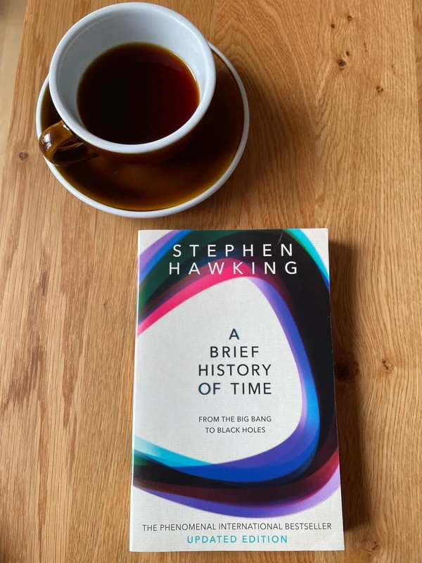 | A Brief History of Time DescriptionWas there a beginning of time? Could time run backwards? Is the universe infinite or does it have boundaries? These are just some of the questions considered in the internationally acclaimed masterpiece by the world renowned physicist - generally considered to have been one of the world's greatest thinkers. It begins by reviewing the great theories of the cosmos from Newton to Einstein, before delving into the secrets which still lie at the heart of space and time, from the Big Bang to black holes, via spiral galaxies and strong theory. To this day A Brief History of Time remains a staple of the scientific canon, and its succinct and clear language continues to introduce millions to the universe and its wonders. | Non-fiction | Very Good | DKK 50 | View on Vinted → |
 | A Clash of Kings DescriptionIn this eagerly awaited sequel to A Game of Thrones, George R.R. Martin has created a work of unsurpassed vision, power, and imagination. A Clash of Kings transports us to a world of revelry and revenge, wizardry and warfare unlike any you have ever experienced. A comet the colour of blood and flame cuts across the sky. And from the ancient citadel of Dragonstone to the forbidding shores of Winterfell, chaos reigns. Six factions struggle for control of a divided land and the Iron Throne of the Seven Kingdoms, preparing to stake their claims through tempest, turmoil, and war. It is a tale in which brother plots against brother and the dead rise to walk at night. Here a princess masquerades as an orphan boy; a knight of the mind prepares a poison for a treacherous sorceress; and wild men descend from the Mountains of the Moon to ravage the countryside. Against a backdrop of incest and fratricide, alchemy and murder, victory may go to the men and women possessed of the coldest steel...and the coldest hearts. For when kings clash, the whole land trembles. Audacious, inventive, brilliantly imagined, A Clash of Kings is a novel of dazzling beauty and boundless enchantment—a tale of pure excitement you will never forget. Genres Fantasy Fiction Epic Fantasy High Fantasy | Fiction | Very Good | DKK 25 | View on Vinted → |
 | A concise history of France DescriptionThis book provides a clear, well-informed and highly illustrated guide to French history from the early Middle Ages to the Mitterrand presidency. It is the most up-to-date and comprehensive study of France available, based on a carefully structured synthesis and written in an entertaining style for the student and traveler. Alongside major themes such as state and society, the impact of war, and the use of political power, Roger Price includes studies of major figures including Louis XIV, the two Napoleons, Clemenceau and De Gaulle, providing a concise yet complete history of the country. With a stamp from: Shakespeare and Company 37 rue de la Bûcherie, 75005 Paris, France Great bookshop! | Non-fiction | Very Good | DKK 60 | View on Vinted → |
 | A Feast for Crows DescriptionTHE BOOK BEHIND THE FOURTH SEASON OF GAME OF THRONES, AN ORIGINAL SERIES NOW ON HBO. Here is the fourth book in the landmark series that has redefined imaginative fiction and become a modern masterpiece in the making. A FEAST FOR CROWS After centuries of bitter strife, the seven powers dividing the land have beaten one another into an uneasy truce. But it’s not long before the survivors, outlaws, renegades, and carrion eaters of the Seven Kingdoms gather. Now, as the human crows assemble over a banquet of ashes, daring new plots and dangerous new alliances are formed while surprising faces—some familiar, others only just appearing—emerge from an ominous twilight of past struggles and chaos to take up the challenges of the terrible times ahead. Nobles and commoners, soldiers and sorcerers, assassins and sages, are coming together to stake their fortunes . . . and their lives. For at a feast for crows, many are the guests—but only a few are the survivors. A GAME OF THRONES • A CLASH OF KINGS • A STORM OF SWORDS • A FEAST FOR CROWS • A DANCE WITH DRAGONS | Fiction | Very Good | DKK 25 | View on Vinted → |
 | A Tale of Two Cities Description'Liberty, equality, fraternity, or death; - the last, much the easiest to bestow, O Guillotine!' Described by Dickens as 'the best story I have written', A Tale of Two Cities interweaves thrilling historical drama with heartbreaking personal tragedy. It vividly depicts a revolutionary Paris running red with blood, and a London where the poor starve. In the midst of the chaos two men - an exiled French aristocrat and a dissolute English lawyer - are both redeemed and condemned by their love for the same woman, as the shadow of La Guillotine draws closer... | Fiction | Very Good | DKK 60 | View on Vinted → |
 | A Whole New Mind DescriptionNew York Times Bestseller An exciting--and encouraging--exploration of creativity from the author of When: The Scientific Secrets of Perfect Timing The future belongs to a different kind of person with a different kind of mind: artists, inventors, storytellers-creative and holistic "right-brain" thinkers whose abilities mark the fault line between who gets ahead and who doesn't. Drawing on research from around the world, Pink (author of To Sell Is Human: The Surprising Truth About Motivating Others) outlines the six fundamentally human abilities that are absolute essentials for professional success and personal fulfillment--and reveals how to master them. A Whole New Mind takes readers to a daring new place, and a provocative and necessary new way of thinking about a future that's already here. | Non-fiction | Very Good | DKK 60 | View on Vinted → |
 | Adventures of an IT Leader DescriptionBecoming an effective IT manager presents a host of challenges--from anticipating emerging technology to managing relationships with vendors, employees, and other managers. A good IT manager must also be a strong business leader. This book invites you to accompany new CIO Jim Barton to better understand the role of IT in your organization. You'll see Jim struggle through a challenging first year, handling (and fumbling) situations that, although fictional, are based on true events. You can read this book from beginning to end, or treat is as a series of cases. You can also skip around to address your most pressing needs. For example, need to learn about crisis management and security? Read chapters 10-12. You can formulate your own responses to a CIO's obstacles by reading the authors' regular "Reflection" questions. You'll turn to this book many times as you face IT-related issues in your own career. | Non-fiction | Good | DKK 40 | View on Vinted → |
 | Aesop's Fables DescriptionIt is thrifty to prepare today for the wants of tomorrow.' Living in Ancient Greece in the 5th Century BC, Aesop was said to be a slave and story-teller. His much-loved, enduring fables are revered the world over and remain popular as moral tales for children. With infamous vignettes, such as the race between the hare and the tortoise, the vain jackdaw, and the wolf in sheep's clothing, the themes of the fables remain as fresh today as when they were first told and give an insight into the Ancient Greek world. | Fiction | Very Good | DKK 60 | View on Vinted → |
 | Anatomy of a Scandal DescriptionAn astonishingly incisive and suspenseful novel about a scandal amongst Britain's privileged elite and the women caught up in its wake. Sophie's husband James is a loving father, a handsome man, a charismatic and successful public figure. And yet he stands accused of a terrible crime. Sophie is convinced he is innocent and desperate to protect her precious family from the lies that threaten to rip them apart. Kate is the lawyer hired to prosecute the case: an experienced professional who knows that the law is all about winning the argument. And yet Kate seeks the truth at all times. She is certain James is guilty and is determined he will pay for his crimes. Who is right about James? Sophie or Kate? And is either of them informed by anything more than instinct and personal experience? Despite her privileged upbringing, Sophie is well aware that her beautiful life is not inviolable. She has known it since she and James were first lovers, at Oxford, and she witnessed how easily pleasure could tip into tragedy. Most people would prefer not to try to understand what passes between a man and a woman when they are alone: alone in bed, alone in an embrace, alone in an elevator... Or alone in the moonlit courtyard of an Oxford college, where a girl once stood before a boy, heart pounding with excitement, then fear. Sophie never understood why her tutorial partner Holly left Oxford so abruptly. What would she think, if she knew the truth? | Fiction | Very Good | DKK 20 | View on Vinted → |
 | Arrangements in Blue DescriptionIs it possible life without romantic love isn't so bad? An essential memoir about building life on your own terms 'Marks an important shift in ideas about intimacy' OBSERVER 'The harbinger of real talent' SUNDAY TIMES 'A tender, subversive study of love' NEW STATESMAN When poet Amy Key was growing up, she looked forward to a life shaped by romance, fuelled by desire, longing and the conventional markers of success that come when you share a life with another person. But that didn't happen for her. Now in her forties, she sets out to explore the realities of a life lived in the absence of romantic love. Using Joni Mitchell's seminal album Blue - which shaped Key's expectations of love - as an anchor, Arrangements in Blue elegantly honours a life lived completely by, and for, oneself. Building a home, travelling alone, choosing whether to be a mother, recognising her own milestones, learning the limits of self-care and the expansive potential of self-friendship, Key uncovers the many forms of connection and care that often go unnoticed. With profound candour and intimacy, Arrangements in Blue explores the painful feelings we are usually too ashamed to discuss: loneliness, envy, grief and failure. The result is a book which inspires us to live and love more honestly. 5* READER REVIEWS: 'It broke and mended my heart simultaneously' 'Stunning, honest, touching' 'An astonishing work, brilliantly written' | Non-fiction | Good | DKK 75 | View on Vinted → |
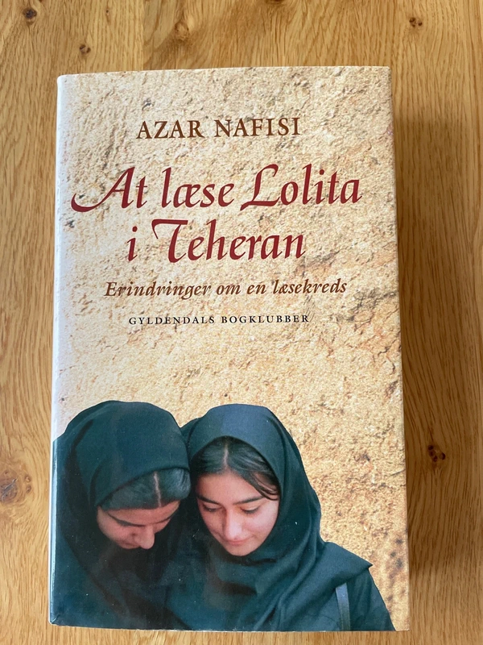 | At læse Lolita i Teheran DescriptionDen iranske kvindelige professor i litteratur Azar Nafisis erindringer fra den islamiske brydningstid under den iranske revolution, hvor hun blev afskediget som underviser på universitetet i Teheran og i al hemmelighed samlede syv af sine kvindelige studerende i en læsekreds. | Fiction | Very Good | DKK 50 | View on Vinted → |
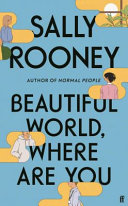 | Beautiful World, Where Are You DescriptionAlice, a novelist, meets Felix, who works in a distribution warehouse, and asks him if he'd like to travel to Rome with her. In Dublin, her best friend Eileen is getting over a break-up, and slips back into flirting with Simon, a man she has known since childhood. Alice, Felix, Eileen and Simon are still young - but life is catching up with them. They desire each other, they delude each other, they get together, they break apart. They have sex, they worry about sex, they worry about their friendships and the world they live in. Are they standing in the last lighted room before the darkness, bearing witness to something? Will they find a way to believe in a beautiful world? 337 pages, Hardcover First published September 7, 2021 | Fiction | Very Good | DKK 70 | View on Vinted → |
 | Between You and Me DescriptionBetween You and Me is a riveting portrayal of female friendship, and the frayed boundary between loyalty and desire. Mari and Elisabeth have been at the centre of each other’s lives for years. Close friends since university, they’re now drifting through their mid-twenties, working casual jobs and living in run-down share houses. When they meet Jack, a charming academic historian twenty years their senior, they’re attracted to the sophisticated, intellectual world in which he seems to move. As the summer gathers heat, Jack is drawn into their lives, and an unconventional relationship – halfway between friendship and love triangle – develops. But soon things grow more complicated, and as secrets and betrayals detonate, the fallout sets the course for the rest of their lives. In Mari and Elisabeth, Joanna Horton has created two unforgettable women, whose choices on the cusp of adulthood will resonate with anyone who has ever had to navigate where friendship, intimacy and love intersect when trying to make a life of one’s own. PRAISE for Between You and Me'A novel that deftly explores the uncomfortable grey areas of power, privilege and control. Between You and Me is a compulsive read about how the choices we make (and those made for us) ripple into the future. At once unsettling and totally captivating.’ – Natasha Sholl, author of Found, Wanting‘I absolutely loved it. The characters felt both deeply familiar and also intriguingly complex and unknowable. An engaging and evocative read that I can't stop thinking about.’ – Eliza Henry-Jones, author of Salt and Skin Genres Fiction Contemporary Romance Literary Fiction Queer Adult | Fiction | Very Good | DKK 90 | View on Vinted → |
 | Big Five for Life Descriptionhis book will inspire you. It will change your life in ways you can't know now, but you'll understand completely once you're done reading it. It will also forever enhance the way you look at your role as a leader. That includes the way you lead at home, at work, in your community...and especially the way you lead you. At every given moment we are all called to be leaders. If for no other purpose than to lead ourselves. After all, someone has to inspire you to get out of bed each day. And that someone, is you. It is told from the perspective of Thomas Derale, a man viewed by the people around him as the greatest leader in the world. At fifty-five years of age he learns he is dying. Yet even in that the act of dying he inspires everyone around him to live. The principles in this book, such as the Big Five for Life and Museum Day Morning, have positively impacted readers around the world. Each in their own unique way as they have applied them to their life, their situation. | Non-fiction | Very Good | DKK 50 | View on Vinted → |
 | Bird Box DescriptionJosh Malerman's debut novel BIRD BOX is a terrifying psychological thriller that will haunt you long after reading. Something is out there, something terrifying that must not be seen. One glimpse of it, and a person is driven to deadly violence. No one knows what it is or where it came from. Five years after it began, a handful of scattered survivors remains, including Malorie and her two young children. Living in an abandoned house near the river, she has dreamed of fleeing to a place where they might be safe. Now that the boy and girl are four, it's time to go, but the journey ahead will be terrifying: twenty miles downriver in a rowboat—blindfolded—with nothing to rely on but her wits and the children's trained ears. One wrong choice and they will die. Something is following them all the while, but is it man, animal, or monster? Interweaving past and present, Bird Box is a snapshot of a world unraveled that will have you racing to the final page. | Fiction | Very Good | DKK 34 | View on Vinted → |
 | Blood of an Exile: Dragons of Terra Book 1 DescriptionDragons of Terra #1 Bershad stands apart from the world, the most legendary dragonslayer in history, both revered and reviled. Once, he was Lord Silas Bershad, but after a disastrous failure on the battlefield, he was stripped of his titles and sentenced to one violent, perilous hunt after another. Now he lives only to stalk dragons, slaughter them, collect their precious oil, and head back into the treacherous wilds once more. For years, death was his only chance to escape. But that is about to change. The king who sentenced Bershad to his fate has just given him an unprecedented chance at redemption. Kill a foreign emperor and walk free forever. The journey will take him across dragon-infested mountains, through a seedy criminal underworld, and into a forbidden city guarded by deadly technology. But the links of fate bind us all. Genres Fantasy Dragons Epic Fantasy Adult Fiction High Fantasy | Fiction | Very Good | DKK 50 | View on Vinted → |
 | Bold Description“A visionary roadmap for people who believe they can change the world—and invaluable advice about bringing together the partners and technologies to help them do it.” —President Bill Clinton A radical, how-to guide for using exponential technologies, moonshot thinking, and crowd-powered tools, Bold unfolds in three parts. Part One focuses on the exponential technologies that are disrupting today’s Fortune 500 companies and enabling upstart entrepreneurs to go from “I’ve got an idea” to “I run a billion-dollar company” far faster than ever before. The authors provide exceptional insight into the power of 3D printing, artificial intelligence, robotics, networks and sensors, and synthetic biology. Part Two draws on insights from billionaires such as Larry Page, Elon Musk, Richard Branson, and Jeff Bezos and reveals their entrepreneurial secrets. Finally, Bold closes with a look at the best practices that allow anyone to leverage today’s hyper-connected crowd like never before. Here, the authors teach how to design and use incentive competitions, launch million-dollar crowdfunding campaigns to tap into tens of billions of dollars of capital, and finally how to build communities—armies of exponentially enabled individuals willing and able to help today’s entrepreneurs make their boldest dreams come true. | Non-fiction | Good | DKK 40 | View on Vinted → |
 | Born a Crime Descriptionrevor Noah’s unlikely path from apartheid South Africa to the desk of The Daily Show began with a criminal act: his birth. Trevor was born to a white Swiss father and a black Xhosa mother at a time when such a union was punishable by five years in prison. Living proof of his parents’ indiscretion, Trevor was kept mostly indoors for the earliest years of his life, bound by the extreme and often absurd measures his mother took to hide him from a government that could, at any moment, steal him away. Finally liberated by the end of South Africa’s tyrannical white rule, Trevor and his mother set forth on a grand adventure, living openly and freely and embracing the opportunities won by a centuries-long struggle. Born a Crime is the story of a mischievous young boy who grows into a restless young man as he struggles to find himself in a world where he was never supposed to exist. It is also the story of that young man’s relationship with his fearless, rebellious, and fervently religious mother—his teammate, a woman determined to save her son from the cycle of poverty, violence, and abuse that would ultimately threaten her own life. The stories collected here are by turns hilarious, dramatic, and deeply affecting. Whether subsisting on caterpillars for dinner during hard times, being thrown from a moving car during an attempted kidnapping, or just trying to survive the life-and-death pitfalls of dating in high school, Trevor illuminates his curious world with an incisive wit and unflinching honesty. His stories weave together to form a moving and searingly funny portrait of a boy making his way through a damaged world in a dangerous time, armed only with a keen sense of humor and a mother’s unconventional, unconditional love. | Non-fiction | Satisfactory | DKK 30 | View on Vinted → |
 | Borneo and the Poet DescriptionIn May 2005 Penguin will publish 70 unique titles to celebrate the company's 70th birthday. The titles in the Pocket Penguins series are emblematic of the renowned breadth of quality of the Penguin list and will hark back to Penguin founder Allen Lane's vision of good books for all'. accompanied by the poet James Fenton, it was in the best tradition of nineteenth-century exploration. They were armed with backbreaking kit suitable to surviving two months in a steaming jungle of creeping, crawling and biting things; their heads brimmed with training provided by the SAS; and O'Hanlon himself had an encyclopedic knowledge of the region's flora and fauna. And yet they proceeded to have an adventure that neither O'Hanlon, his poet friend nor his guides were quite prepared for | Non-fiction | Very Good | DKK 45 | View on Vinted → |
 | Bounce DescriptionWhat are the real secrets of sporting success, and what lessons do they offer about life? Why doesn’t Tiger Woods “choke”? Why are the best figure skaters those that have fallen over the most and why has one small street in Reading produced more top table tennis players than the rest of the country put together. Two-time Olympian and sports writer and broadcaster Matthew Syed draws on the latest in neuroscience and psychology to uncover the secrets of our top athletes and introduces us to an extraordinary cast of characters, including the East German athlete who became a man, and her husband – and the three Hungarian sisters who are all chess grandmasters. Bounce is crammed with fascinating stories and statistics. Looking at controversial questions such as whether talent is more important than practice, drugs in sport (and life), the mind-bending Bounce is a must-read for the hardened sports nut or brand new convert. Genres Nonfiction Psychology Self Help Business Science Personal Development Sports | Non-fiction | Good | DKK 50 | View on Vinted → |
 | Breath DescriptionTHE PHENOMENAL INTERNATIONAL BESTSELLER AS HEARD ON STEVEN BARTLETT'S 'DIARY OF A CEO' 'Who would have thought something as simple as changing the way we breathe could be so revolutionary for our health, from snoring to allergies to immunity? A fascinating book, full of dazzling revelations' Dr Rangan Chatterjee There is nothing more essential to our health and wellbeing than breathing: take air in, let it out, repeat 25,000 times a day. Yet, as a species, humans have lost the ability to breathe correctly, with grave consequences. In Breath, journalist James Nestor travels the world to discover the hidden science behind ancient breathing practices to figure out what went wrong and how to fix it. Modern research is showing us that making even slight adjustments to the way we inhale and exhale can: - improve our exercise techniques - restore healthy sleep patterns and minimise snoring - halt allergies, asthma and even autoimmune disease Drawing on thousands of years of ancient wisdom and cutting-edge studies, Breath is full of revelations, turning what we thought we knew about our most basic biological function on its head. You will never breathe the same again. | Non-fiction | Good | DKK 60 | View on Vinted → |
 | Bro on the Go DescriptionTHE BRO CODE provides men with all the rules they need to know in order to become a "bro" and behave properly among other bros. THE BRO CODE has never been published before. Few know of its existence, and the code, until now, has been verbally communicated between those in the 'bro'. Containing approximately 150 "unspoken" rules, this code of conduct ranges from the simple (bros before hos) to the complex (the hot-to-crazy ratio, complete with bar graphs and charts). With helpful sidebros THE BRO CODE will help any ordinary guy become the best bro he can be. Let ultimate bro and co-author Barney Stinson and his book, THE BRO CODE share their wisdom, lest you be caught making eye contact in a devil's three-way (two dudes, duh.) Sample Articles from THE BRO CODE: Article 1: Regardless of veracity, a Bro never admits familiarity with a Broadway show or musical. Article 53: A Bro will, whenever possible, provide his Bro with prophylactic protection.Article 57: A Bro may not speculate on the expected Bro / chick ratio of a party or venue without first disclosing the present-time observed ratio. | Fiction | Good | DKK 35 | View on Vinted → |
 | Business Network Transformation DescriptionIn order to defend themselves against commoditization and disruptive innovation, leading companies are now gaining competitive advantage through networked business models and tapping into talent from outside their company. Rather than implementing rigid "built-to-last" processes, organizations are now constructing more fluid "built-to-adapt" networks in which each member focuses on its differentiation and relies increasingly on its partners, suppliers, and customers to provide the rest. With contributions by the biggest names in business network transformation, this book offers cutting edge research and an in-depth exploration of critical topics such as customer value, supply networks, product leadership, global processes, operations, innovation, relationship management, and IT. The book also provides practical guidance for successfully engaging in BNT, and is filled with illustrative case studies from some of the world's largest and most successful companies. It contains the vital information business leaders need to enable their companies to deliver faster innovation to customers at lower cost by sharing investments, assets, and ideas across their business networks. An essential resource for all business leaders, Business Network Transformation shows how to transform any business network to achieve competitive advantage and increase the bottom line. All royalties from this book will be donated to the World Food Programme, the United Nations' frontline agency in the fight against global hunger, which reaches an average of 100 million people in 80 countries every year. www.wfp.org | Non-fiction | Very Good | DKK 50 | View on Vinted → |
 | Carried Away : The Invention of Modern Shopping DescriptionAsserting that a history of shopping was, until recently, a history of women, Rachel Bowlby trains her eye on the evolution of the modern shopper. She uses a compelling blend of history, literary analysis, and cultural criticism to explore the rise of department stores and supermarkets of the United States, France, and Great Britain.Bowlby recalls the fascinating early days of these institutions. In the mid-nineteenth century, when department stores first developed, their fabulous new buildings brought middle-class women into town, where they could indulge in what was then a new a day's shopping. The stores offered luxury, flattering women into believing that they belonged in a beautiful environment. It is here, Bowlby argues, that the idea of the modern woman's passion for fashion and shopping took hold.Developed in the twentieth century, supermarkets took an opposite they offered functionality, standardization, and cheapness. However, Bowlby claims, despite their differences, the two institutions belong together as emblematic of their respective eras' social the department store with the growth of cities, the supermarket with the proliferation of suburbs. With their dazzling lights and displays, both supermarkets and department stores were thought to produce in females an enhanced or trance-like state of mind.For readers who regard shopping as a spectator or participatory sport, and for those who wish to understand our culture and the psychology of women, or those who simply enjoy a witty, literate romp through the aisles, Carried Away is the perfect purchase. | Non-fiction | Good | DKK 50 | View on Vinted → |
 | Caught Between A Dream and A Job DescriptionIt’s Time to Hire Yourself! Delatorro McNeal wants to help you move from “just a paycheck” to a life of significance, meaning, and excitement; a life of hope and expectation. Through the interactive questions and activities, motivating quotes, and realistic and doable transition strategies. Caught Between a Dream and a Job will help you discover all that is possible for you as you learn · Define true success for yourself· Frame your work around your life—instead of the other way around· Become the person that you have always wanted to be by setting the extraordinary as your new standard· Systematically move from job living to dream living· Do what you love to do—and get paid to do it Your work was never meant to be just a job. You are a blessed, uniquely special individual with tremendous gifts, talents, abilities, and skills that were designed to solve problems and transform lives in this world. Get started today and discover the life you were made for! | Non-fiction | Very Good | DKK 50 | View on Vinted → |
 | Change by Design: How Design Thinking Transforms Organizations and Inspires Innovation DescriptionThe subject of “design thinking” is the rage at business schools, throughout corporations, and increasingly in the popular press—due in large part to work of IDEO, a leading design firm, and its celebrated CEO, Tim Brown, who uses this book to show how the techniques and strategies of design belong at every level of business. The myth of innovation is that brilliant ideas leap fully formed from the minds of geniuses. The reality is that most innovations come from a process of rigorous examination through which great ideas are identified and developed before being realized as new offerings and capabilities. Change by Design explains design thinking, the collaborative process by which the designer’s sensibilities and methods are employed to match people’s needs, not only with what is technically feasible, but what is viable to the bottom line. Design thinking converts need into demand. It’s a human-centered approach to problem solving that helps people and organizations become more innovative and more creative. Introduced a decade ago, the concept of design thinking remains popular at business schools, throughout corporations, and increasingly in the popular press—due in large part to work of IDEO, the undisputed world leading strategy, innovation, and design firm headed by Tim Brown. As he makes clear in this visionary guide—now updated with addition material, including new case studies, and a new introduction—design thinking is not just applicable to so-called creative industries or people who work in the design field. It’s a methodology that has been used by organizations such as Kaiser Permanente, to increase the quality of patient care by re-examining the ways that their nurses manage shift change, or Kraft, to rethink supply chain management. Change by Design is not a book by designers for designers; it is a book for creative leaders seeking to infuse design thinking into every level of an organization, product, or service to drive new alternatives for business… | Non-fiction | Very Good | DKK 100 | View on Vinted → |
 | Click: What We Do Online and Why It Matters DescriptionIn one short decade, the internet has become a critical part of our everyday lives. In this timely new book, internet data analysis expert Bill Tancer makes sense of why this is, and reveals what our internet usage says about us and our future ... because asking people what they do is never as reliable as watching what they do. In Click, Bill Tancer takes us behind the scenes into the massive database of online intelligence to reveal the naked truth about how we use the web, navigate to sites and search for information; he describes in unmatched detail explanations about our lives, our interests, our thoughts, our fears and our dreams. As online directories replace the yellow pages, search engines replace traditional research and news sites replace newsprint, we live in an age in which we've come to rely tremendously on the internet for many purposes. Through our usage, we leave behind an amazing trail of information about ourselves - our "clickstream" - and the direction in which we are headed that Click exposes and explains here for the first time. | Fiction | Good | DKK 30 | View on Vinted → |
 | Clockwork Angel DescriptionThe first novel in the Infernal Devices trilogy--a prequel to the "New York Times"-bestselling Mortal Instruments series. The year is 1878. Tessa Gray descends into Victorian London's dark underworld to search for her missing brother, with the mysterious Shadowhunters as her only allies. Magic is dangerous — but love is more dangerous still When sixteen-year-old Tessa Gray crosses the ocean to find her brother, her destination is England, the time is the reign of Queen Victoria, and something terrifying is waiting for her in London's Downworld, where vampires, warlocks and other supernatural folk stalk the gaslit streets. Friendless and hunted, Tessa seeks refuge with the Shadowhunters, a band of warriors dedicated to ridding the world of demons. Drawn ever deeper into their world, she finds herself fascinated by — and torn between — two best friends and quickly realizes that love may be the most dangerous magic of all. Genres Fantasy Young Adult Romance Paranormal Steampunk Historical Fiction Fiction | Kids & young adults | Good | DKK 30 | View on Vinted → |
 | Colorless Tsukuru Tazaki and His Years of Pilgrimage DescriptionTsukuru Tazaki had four best friends at school. By chance all of their names contained a colour. The two boys were called Akamatsu, meaning 'red pine', and Oumi, 'blue sea', while the girls' names were Shirane, 'white root', and Kurono, 'black field'. Tazaki was the only last name with no colour in it. One day Tsukuru Tazaki's friends announced that they didn't want to see him, or talk to him, ever again. Since that day Tsukuru has been floating through life, unable to form intimate connections with anyone. But then he meets Sara, who tells him that the time has come to find out what happened all those years ago. INSTANT #1 NEW YORK TIMES BESTSELLER • One of the most revered voices in literature today gives us a story of love, friendship, and heartbreak for the ages. “Mesmerizing, immersive, hallucinogenic.”—Entertainment Weekly Colorless Tsukuru Tazaki and His Years of Pilgrimage is the remarkable story of a young man haunted by a great loss; of dreams and nightmares that have unintended consequences for the world around us; and of a journey into the past that is necessary to mend the present. Genres Fiction Japan Japanese Literature Contemporary Magical Realism 298 pages, Hardcover First published April 12, 2013 | Fiction | Good | DKK 70 | View on Vinted → |
 | Cousins DescriptionAt the age of 85, Aurora Venturini stunned Argentine readers when her darkly funny and formally daring novel, Cousins, won Página/12's New Novel Award. She had already written more than thirty books-but it was only then, in 2007, that she was widely recognized as a radical voice in Spanish-language literature. Venturini never stopped writing in her 92 years and lived a life immersed in the literature and culture of the twentieth century: her first award was given to her in person by Jorge Luis Borges, she was friends and colleagues with Eva Peron; and when she lived in exile in Paris she socialized with a sparkling milieu of writers and philosophers, including Simone de Beauvoir and Jean-Paul Sartre. Widely regarded as Venturini's masterpiece, Cousins is the story of four women from an impoverished, dysfunctional family in La Plata, Argentina, who are forced to suffer a series of ordeals including disfigurement, illegal abortions, miscarriages, sexual abuse and murder, narrated by a daughter whose success as a painter offers her a chance to achieve economic independence and help her family as best she can. Neighborhood mythologies, family, female sexuality, vengeance, and social mobility through art are explored and scrutinized in the unmistakable voice of an unforgettable protagonist, Yuna, who stares wildly at the world in which she is compelled to live; a voice unique in its candidness, sharp edge and utterly breathtaking power. Cousins is the jewel in Venturini's oeuvre-mischievous and stylish, vital and mysterious, and completely original. | Fiction | Good | DKK 95 | View on Vinted → |
 | Crush It!: Why Now Is the Time to Cash In on Your Passion DescriptionDo you have a hobby you wish you could indulge in all day? An obsession that keeps you up at night? Now is the perfect time to take that passion and make a living doing what you love. In Crush It! Why NOW Is the Time to Cash In on Your Passion, Gary Vaynerchuk shows you how to use the power of the Internet to turn your real interests into real businesses. Gary spent years building his family business from a local wine shop into a national industry leader. Then one day he turned on a video camera, and by using the secrets revealed here, transformed his entire life and earning potential by building his personal brand. By the end of this book, readers will have learned how to harness the power of the Internet to make their entrepreneurial dreams come true. Step by step, Crush It! is the ultimate driver’s manual for modern business. 142 pages, Hardcover | Non-fiction | Good | DKK 25 | View on Vinted → |
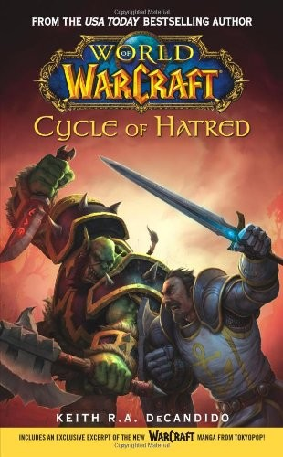 | Cycle of Hatred DescriptionWorld of Warcraft #1 The Burning Legion has been defeated, and eastern regions of Kalimdor are now shared by two nations: the orcs of Durotar, led by their noble Warchief, Thrall; and the humans of Theramore, led by one of the most powerful mages alive -- Lady Jaina Proudmoore. But the tentative peace between orcs and humans is suddenly crumbling. Random attacks against Durotar's holdings suggest that the humans have renewed their aggression toward the orcs. Now Jaina and Thrall must avert disaster before old hatreds are rekindled -- and Kalimdor is plunged into another devastating war. Jaina's search to uncover the truth behind the attacks leads her to a shocking revelation. Her encounter with a legendary, long-lost wizard will challenge everything that she believes and illuminate the secret history of the world of... Genres Fantasy Warcraft World Of Warcraft Fiction Video Games Gaming Games | Fiction | Good | DKK 160 | View on Vinted → |
 | Data Driven DescriptionA "how-to" guide to boosting sales through predictive and prescriptive analytics Data Driven is a uniquely practical guide to increasing sales success, using the power of data analytics. Written by one of the world's leading authorities on the topic, this book shows you how to transform the corporate sales function by leveraging big data into better decision-making, more informed strategy, and increased effectiveness throughout the organization. Engaging and informative, this book tells the story of a newly hired sales chief under intense pressure to deliver higher performance from her team, and how data analytics becomes the ultimate driver behind the sales function turnaround. Each chapter features insightful commentary and practical notes on the points the story raises, and one entire chapter is devoted solely to laying out the Prescriptive Action Model step-by-step giving you the actionable guidance you need to put it into action in your own organization. Predictive and prescriptive analytics is poised to change corporate sales, and companies that fail to adapt to the new realities and adopt the new practices will be left behind. This book explains why the Prescriptive Action Model is the key corporate sales weapon of the 21st Century, and how you can implement this dynamic new resource to bring value to your business. Exploit one of the last remaining sources of competitive advantage Re-engineer the sales function to optimize success rates Implement a more effective analytics model to drive efficient change Boost operational effectiveness and decision making with big data There are fewer competitive edges to gain than ever before. The only thing that's left is to execute business with maximum efficiency and make the smartest business decisions possible. Predictive analytics is the essential method behind this new standard, and Data Driven is the practical guide to complete, efficient implementation. | Non-fiction | Very Good | DKK 100 | View on Vinted → |
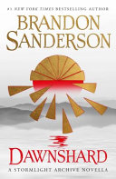 | Dawnshard DescriptionWhen a ghost ship is discovered, its crew presumed dead after trying to reach the storm-shrouded island of Akinah, Navani Kholin must send an expedition to make sure the island hasn't fallen into enemy hands. Knights who fly too near find their magic suddenly drained, so the voyage must be by sea. Years ago, shipowner Rysn Ftori lost the use of her legs but gained the companionship of Chiri-Chiri, a stormlight-ingesting larkin, a species once thought extinct. Now Rysn's pet is ill, and any hope for Chiri-Chiri's recovery can be found only at the ancestral home of the larkin: Akinah. With the help of Lopen, the formerly one-armed windrunner, Rysn must accept Navani's quest and sail into the perilous storm from which no one has returned alive. If the crew cannot uncover the secrets of the hidden island city before the wrath of its ancient guardians falls upon them, the fate of Roshar and the entire Cosmere hangs in the balance. | Fiction | Very Good | DKK 60 | View on Vinted → |
 | Days of God: The Revolution in Iran and Its Consequences DescriptionA revelatory, myth-busting insider’s account of the Iranian Revolution of 1979 that details the escalating horror as Ayatollah Khomeini seized power, altering the course of history in the Middle East and the world. James Buchan was studying in Iran in the 1970s when the turmoil that culminated in the revolution began. Fluent in Persian, he draws on a wealth of Iranian records, memoirs, and newspaper reports and brings an extraordinary depth of knowledge and personal experience to the first full account of that tumultuous time. Buchan explores the roots of the revolution in the old regime and the role that American, British, and Russian interference played in creating fissures in the Shah’s base of power. He illuminates how even as the Iranian economy flourished, the Islamic clergy began to capture public loyalty, and argues that Ayatollah Khomeini was not the instigator of the first protests, as received wisdom stresses, and that religious frustration played a more important role. Buchan captures the wildly escalating violence and overheated passions that gripped the country, reaching a fevered pitch when Khomeini returned from exile and launched a reign of terror and mass executions that left no viable opposition to his rule. A dramatic, scene-by-scene account with rich characterizations of the leading players as well as of the ordinary Iranians who were swept into the maelstrom, Days of God is history writing at its vivid best. | Non-fiction | Good | DKK 60 | View on Vinted → |
 | Det jeg elskede DescriptionTo familier - kunstnere og intellektuelle - er naboer i et hus i SoHo i New York og deler både stor glæde og dyb sorg. Med indblik i såvel den kreative proces som personlige dramaer gives et nuanceret billede af New Yorks kunstnermiljø - fra de eksklusive galleriers glimmer til seksuel perversion og mord. Med Det jeg elskede har Siri Hustvedt skrevet en stor eksistentiel roman. Siri Hustvedts litteratur er smuk, elegant, velovervejet og intellektuel (...) Kunstnerroman, kriminalroman, kærlighedsroman, filosofisk roman, essayroman, skæbnefortælling, thriller. Den begærlige læser kan bare komme an. Bogen har det hele." Klaus Rothstein i Weekendavisen Siri Hustvedts nyeste roman, den tredje i rækken, er rasende begavet, gnistrende intens, sønderrivende smertelig og betagende gådefuld i hele sin overvældende og meget, meget krævende kompleksitet. Den er formidabel, simpelthen!" Henriette Bacher Lind i Jyllandsposten Siri Hustvedt kan skrive de fleste forfattere sønder og sammen (...) Blændende begavet afdækker hun fortællingen om livet og det sårede menneskesind og formidler suverænt sine personers følelser og tanker, så læseren går i knæ. En uafrystelig læseoplevelse." Lone Dueholm i IN | Fiction | Very Good | DKK 30 | View on Vinted → |
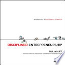 | Disciplined Entrepreneurship Description24 Steps to Success! Disciplined Entrepreneurship will change the way you think about starting a company. Many believe that entrepreneurship cannot be taught, but great entrepreneurs aren’t born with something special – they simply make great products. This book will show you how to create a successful startup through developing an innovative product. It breaks down the necessary processes into an integrated, comprehensive, and proven 24-step framework that any industrious person can learn and apply. You will learn: Why the “F” word – focus – is crucial to a startup’s success Common obstacles that entrepreneurs face – and how to overcome them How to use innovation to stand out in the crowd – it’s not just about technology Whether you’re a first-time or repeat entrepreneur, Disciplined Entrepreneurship gives you the tools you need to improve your odds of making a product people want. Author Bill Aulet is the managing director of the Martin Trust Center for MIT Entrepreneurship as well as a senior lecturer at the MIT Sloan School of Management. For more please visit http://disciplinedentrepreneurship.com/ | Non-fiction | Good | DKK 50 | View on Vinted → |
 | Don't Stop Me Now DescriptionThere's more to life than cars. Jeremy Clarkson knows this. There is, after all a whole world out there just waiting to be discovered. So, before, he gets on to torque steer and active suspension, he takes time to consider: the madness of Galapagos tortoises; the similarities between Jeremy Paxman and AC/DC's bass guitarist; the problems and perils of being English; God's dumbest creation. Then there are the the cars: whether it's the poxiest little runabout or an exotic, firebreathing supercar, no one does cars like Clarkson. Unmoved by mechanics' claims and unimpressed by press junkets, he approaches anything on four wheels without fear or favour. What emerges from the ashes is rarely pretty. But always very, very funny. | Non-fiction | Very Good | DKK 20 | View on Vinted → |
 | Eat that Frog! DescriptionProcrastinators, be advised: Success is not a magical combination of genetics and fashion sense. Rather, it is a series of time management behaviors which must be practiced on a regular basis. Luckily, EAT THAT FROG! will show you how to deal with those challenging tasks you keep putting off in an accessible comic book format. Instead of slowing you down, completing these hard jobs only empowers you to tackle the rest of your day. | Other | Good | DKK 65 | View on Vinted → |
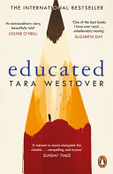 | Educated DescriptionTara Westover grew up preparing for the End of Days, watching for the sun to darken, for the moon to drip as if with blood. She spent her summers bottling peaches and her winters rotating emergency supplies, hoping that when the World of Men failed, her family would continue on, unaffected. She hadn’t been registered for a birth certificate. She had no school records because she’d never set foot in a classroom, and no medical records because her father didn’t believe in doctors or hospitals. According to the state and federal government, she didn’t exist. As she grew older, her father became more radical, and her brother, more violent. At sixteen Tara decided to educate herself. Her struggle for knowledge would take her far from her Idaho mountains, over oceans and across continents, to Harvard and to Cambridge. Only then would she wonder if she’d travelled too far. If there was still a way home. EDUCATED is an account of the struggle for self-invention. It is a tale of fierce family loyalty, and of the grief that comes with the severing of the closest of ties. With the acute insight that distinguishes all great writers, from her singular experience Westover has crafted a universal coming-of-age story that gets to the heart of what an education is and what it offers: the perspective to see one's life through new eyes, and the will to change it. Genres Nonfiction Memoir Book Club Biography Biography Memoir Autobiography | Non-fiction | Very Good | DKK 60 | View on Vinted → |
 | Elleve minutter Description”For at skrive om seksualitetens hellige dimension måtte jeg forstå, hvordan den var blevet så vanhelliget.” –Paulo Coelho Maria, en ung og smuk kvinde fra en brasiliansk landsby, lader sig, efter at have mødt en schweizisk teaterdirektør, forføre af længslen efter et bedre liv. Hun flytter til Genève, hvor hun drømmer om et liv som rig og berømt, men ender i stedet som prostitueret. Hun forsøger at forstå livet og menneskets sjæl gennem flygtige relationer, indtil en ung maler får hende til at åbne øjnene for en ny form for bevidsthed. I denne selverkendelsens odyssé tvinges Maria til at træffe et afgørende valg: hun kan enten følge den mørke vej til seksuel tilfredsstillelse for dennes egen skyld eller sætte alt på spil for at finde sit eget ´indre lys´, og derved åbne for muligheden af at nå en ophøjet seksuel tilstand - den som er en del af kærligheden.”Hvis jeg ikke tænker på kærligheden, bliver jeg til ingenting”, skriver Maria, hovedpersonen i Elleve minutter, i sin dagbog. Elleve minutter bygger på en sand historie og er fortællingen om Maria, en ung kvinde fra en lille by i Brasilien. Hendes første møde med kærligheden bliver skæbnesvangert, og hun begynder at tro, at hun aldrig vil møde den ægte kærlighed. Da hun senere kommer til Genève, fører hendes drømme om rigdom og succes hende ud i prostitution. Med sin simple baggrund og begrænsede livserfaring har Marie kun lidt at stå imod med i dette hårde møde med virkeligheden. Mens hun drives stadig længere væk fra kærligheden, bliver hun stadig mere fascineret af fænomenet sex. Gennem den smertefulde vej til selvindsigt tvinges Maria til at vælge mellem den dyriske, fysiske lyst og at risikere alt for den lyse side af seksualiteten. Elleve minutter er en modig og gribende roman om kærlighedens og seksualitetens væsen som et instrument til at forstå sig selv. ”Paulo Coelho formår endnu en gang at røre sjælen … en bog om at få krop og sjæl til at gå op i en højere enhed.” –Søndag | Fiction | Good | DKK 25 | View on Vinted → |
 | En amerikaners lidelser DescriptionEn New York-psykiater gennemgår sin afdøde fars papirer i håb om at lære den mand at kende, som han aldrig rigtig forstod. Det viser sig, at faderen åbenbart har haft dystre hemmeligheder i sit liv, og pludselig begynder ukendte truende personer også at interessere sig for hans papirer. | Fiction | Very Good | DKK 25 | View on Vinted → |
 | Enchanted Objects DescriptionIn the tradition of Who Owns the Future? and The Second Machine Age, an MIT Media Lab scientist imagines how everyday objects can intuit our needs and improve our lives. We are now standing at the precipice of the next transformative development: the Internet of Things. Soon, connected technology will be embedded in hundreds of everyday objects we already use: our cars, wallets, watches, umbrellas, even our trash cans. These objects will respond to our needs, come to know us, and learn to think on our behalf. David Rose calls these devices—which are just beginning to creep into the marketplace—Enchanted Objects. Some believe the future will look like more of the same—more smartphones, tablets, screens embedded in every conceivable surface. Rose has a different vision: technology that atomizes, combining itself with the objects that make up the very fabric of daily living. Such technology will be woven into the background of our environment, enhancing human relationships and channeling desires for omniscience, long life, and creative expression. The enchanted objects of fairy tales and science fiction will enter real life. Groundbreaking, timely, and provocative, Enchanted Objects is a blueprint for a better future, where efficient solutions come hand in hand with technology that delights our senses. It is essential reading for designers, technologists, entrepreneurs, business leaders, and anyone who wishes to understand the future and stay relevant in the Internet of Things. | Non-fiction | Very Good | DKK 40 | View on Vinted → |
 | Endelig ikke-ryger! DescriptionFøler du, at det er på tide at kvitte smøgerne én gang for alle og i stedet gå ned ad den røgfrie vej, så er "Endelig ikke-ryger" uden tvivl bogen for dig. Allen Carr skal nemlig nok hjælpe dig på vej uden at gøre brug af hverken skræmmekampagner eller nikotintyggegummi. Allen Carr er en erfaren mand i forhold til selvhjælpsbøger og med over 11 millioner solgte eksemplarer verden over, har bogen hjulpet en masse mennesker. "Endelig ikke-ryger" gennemgår trin for trin baggrunden for rygning og hertil, hvordan du holder op med at ryge. | Non-fiction | Very Good | DKK 40 | View on Vinted → |
 | Eve DescriptionHow did wet nurses drive civilization? Are women always the weaker sex? Is sexism useful for evolution? And are our bodies at war with our babies? In Eve, Cat Bohannon answers questions scientists should have been addressing for decades. With boundless curiosity and sharp wit, she covers the past 200 million years to explain the specific science behind the development of the female sex. Eve is not only a sweeping revision of human history, it's an urgent and necessary corrective for a world that has focused primarily on the male body for far too long. Bohannon's findings, including everything from the way C-sections in the industrialized world are rearranging women's pelvic shape to the surprising similarities between pus and breast milk, will completely change what you think you know about evolution and why Homo sapiens have become such a successful and dominant species, from tool use to city building to the development of language. | Non-fiction | Very Good | DKK 80 | View on Vinted → |
 | Executive E. Q. DescriptionExecutives, managers, and professionals all across America are praising Executive EQ and are putting the precepts of this book into action for raising emotional intelligence in their leadership and at all levels of their organizations. | Non-fiction | Very Good | DKK 50 | View on Vinted → |
 | Fish Can't See Water DescriptionHow national culture impacts organizational culture—and business success Using extensive case studies of successful global corporations, this book explores the impact of national culture on the corporate strategy and its execution, and through this ultimately business success—or failure. It does not argue that different cultures lead to different business results, but that all cultures impact organizations in ways both positive and negative, depending on the business cycle, the particular business, and the particular strategies being pursued. Depending on all of these factors, cultural dynamics can either enable or derail performance. But recognizing those cultural factors is difficult for business leaders; like everyone else, they too can be blind to the culture of which they are a part. The book offers managers and leaders eight recommendations for recognizing those cultural factors that negatively impact performance, as well as those that can be harnessed to encourage superior performance. With real case studies from companies in Asia, Europe, and the United States, this book offers a truly global approach to organizational culture. Offers a fresh approach to the effects of national culture on organizational culture that is applicable to any country in any region Based on case studies of such companies as Toyota, Samsung, General Motors, Nokia, Walmart, Kone and British Leyland It describes the origins and nature of the most common corporate crisis and how culture impacts the response to such a crisis Ideal for managers, business leaders, and board members, as well as business school students A welcome response to the flat-Earth fad that argues we're all alike, this book offers a nuanced and practical view of cultural differentiators and how they can enable or derail business performance. | Non-fiction | Very Good | DKK 50 | View on Vinted → |
 | For One More Day Description"Every family is a ghost story..." Mitch Albom mesmerized readers around the world with his number one New York Times bestsellers, The Five People You Meet in Heaven and Tuesdays with Morrie. Now he returns with a beautiful, haunting novel about the family we love and the chances we miss. For One More Day is the story of a mother and a son, and a relationship that covers a lifetime and beyond. It explores the question: What would you do if you could spend one more day with a lost loved one? As a child, Charley "Chick" Benetto was told by his father, "You can be a mama's boy or a daddy's boy, but you can't be both." So he chooses his father, only to see the man disappear when Charley is on the verge of adolescence. Decades later, Charley is a broken man. His life has been crumbled by alcohol and regret. He loses his job. He leaves his family. He hits bottom after discovering his only daughter has shut him out of her wedding. And he decides to take his own life. He makes a midnight ride to his small hometown, with plans to do himself in. But upon failing even to do that, he staggers back to his old house, only to make an astonishing discovery. His mother, who died eight years earlier, is still living there, and welcomes him home as if nothing ever happened.. What follows is the one "ordinary" day so many of us yearn for, a chance to make good with a lost parent, to explain the family secrets, and to seek forgiveness. Somewhere between this life and the next, Charley learns the astonishing things he never knew about his mother and her sacrifices. And he tries, with her tender guidance, to put the crumbled pieces of his life back together. Through Albom's inspiring characters and masterful storytelling, readers will newly appreciate those whom they love and may have thought they'd lost in their own lives. For One More Day is a book for anyone in a family, and will be cherished by Albom's millions of fans worldwide. | Fiction | Very Good | DKK 85 | View on Vinted → |
 | Forbandede ungdom DescriptionOriginaltitel: The catcher in the rye Selvom det er over halvtreds år siden, at ”Forbandede ungdom” udkom, er den stadig bemærkelsesværdig aktuel. Romanens billede af en ung dreng på tærsklen mellem barn og voksen er både rystende og underholdende læsning. De fleste 16-årige kan vel godt blive enige om, at teenageårene er én lang eksistentialistisk krise. For Holden Caulfield bliver det bare for uoverskueligt at forholde sig til omverdenen og det at blive voksen – for hvad pokker er meningen med det hele? Holden befinder sig på en ikke nærmere defineret institution og genfortæller historien om dagene op til sin indlæggelse. En tilsyneladende normal dreng, fra en rar familie og med interesserede omgivelser, og alligevel går det galt. Alting ses igennem hovedpersonens øjne, og som læser er man så selv nødt til at forsøge at tilføre fortællingen lidt mening de steder, hvor Holdens logik ikke helt slår til. ”Forbandede ungdom” er en noget alvorligere og mere klaustrofobisk fortælling end sin danske pendant Leif Panduros ”Rend mig i traditionerne”, men den har samme forførende surrealistiske univers. | Fiction | Satisfactory | DKK 50 | View on Vinted → |
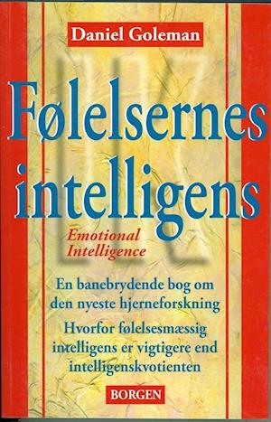 | Følelsernes intelligens - Emotional Intelligence DescriptionDaniel Goleman stiller spørgsmålstegn ved, hvor sigende vores IK er for vores succes – og for det gode samfund. I spørgsmålet om IK glemmer man nemlig, at kvaliteter som empati, selverkendelse og situationsfornemmelse også er vigtige – og måske vigtigere. I “Følelsernes intelligens” bliver der lagt vægt på, hvor vigtigt det er, at være netop følelsesmæssigt intelligent. Det er dem, der er dét, der kan få deres liv til at fungere bedst – både i privat og arbejdsmæssig sammenhæng. “Følelsernes intelligens” bygger på årelange undersøgelser, som viser, at mennesker der er selvstændige, næstekærlige og medfølende, er nødvendige for et godt samfund. | Non-fiction | Good | DKK 60 | View on Vinted → |
 | Geisha of Gion Description'I can identify the exact moment when things began to change. It was a cold winter afternoon. I had just turned three.' Emerging from her hiding place, Mineko encounters Madam Oima, the formidable proprietress of a prolific geisha house in Gion. Madam Oima is mesmerized by the child's black hair and black eyes: she has found her successor. And so Mineko is gently, but firmly, prised away from her parents to embark on an extraordinary profession, of which she will become the best. But even if you are exquisitely beautiful and the darling of the okiya, the life of a geisha is one of gruelling professional demands. And Mineko must first contend with her bitterly jealous sister who is determined to sabotage her success... Captivating and poignant, Geisha of Gion tells of Mineko's ascendancy to fame and her ultimate decision to leave the profession she found so constricting. After centuries of mystery Mineko is the only geisha to speak out. This is the true story she has long wanted to tell and the one that the West has long wanted to hear. Genres Nonfiction Japan Memoir Biography History Asia Japanese Literature | Non-fiction | Very Good | DKK 55 | View on Vinted → |
 | Give Me Liberty!: An American History (Seagull Fifth Edition) DescriptionGive Me Liberty! is the #1 book in the U.S. history survey course because it works in the classroom. A single-author text by a leader in the field, Give Me Liberty! delivers an authoritative, accessible, concise, and integrated American history. Updated with powerful new scholarship on borderlands and the West, the Fifth Edition brings new interactive History Skills Tutorials and Norton InQuizitive for History, the award-winning adaptive quizzing tool. The best-selling Seagull Edition is also available in full color for the first time. | Non-fiction | Good | DKK 60 | View on Vinted → |
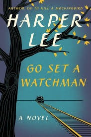 | Go set a watchman DescriptionFrom Harper Lee comes a landmark new novel set two decades after her beloved Pulitzer Prize-winning masterpiece, To Kill a Mockingbird. Maycomb, Alabama. Twenty-six-year-old Jean Louise Finch—"Scout"—returns home from New York City to visit her aging father, Atticus. Set against the backdrop of the civil rights tensions and political turmoil that were transforming the South, Jean Louise's homecoming turns bittersweet when she learns disturbing truths about her close-knit family, the town and the people dearest to her. Memories from her childhood flood back, and her values and assumptions are thrown into doubt. Featuring many of the iconic characters from To Kill a Mockingbird, Go Set a Watchman perfectly captures a young woman, and a world, in a painful yet necessary transition out of the illusions of the past—a journey that can be guided only by one's conscience. Written in the mid-1950s, Go Set a Watchman imparts a fuller, richer understanding and appreciation of Harper Lee. Here is an unforgettable novel of wisdom, humanity, passion, humor and effortless precision—a profoundly affecting work of art that is both wonderfully evocative of another era and relevant to our own times. It not only confirms the enduring brilliance of To Kill a Mockingbird, but also serves as its essential companion, adding depth, context and new meaning to an American classic. | Fiction | Very Good | DKK 35 | View on Vinted → |
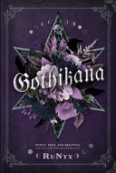 | Gothikana: a Dark Academia Gothic Romance: TikTok Made Me Buy It! DescriptionAn unusual girl. An enigmatic man. An ancient castle. What could go wrong? An outcast her entire life, Corvina Clemm is left adrift after losing her mother. When she receives the admission letter from the mysterious University of Verenmore, she accepts it as a sign from the universe. The last thing she expects though is an olden, secluded castle on top of a mountain riddled with secrets, deceit, and death. An enigma his entire life, Vad Deverell likes being a closed book but knowing exactly everything that happens in the university. A part-time professor working on his thesis, Vad has been around long enough to know the dangers the castle possesses. And he knows the moment his paths cross with Corvina, she's dangerous to everything that he is. They shouldn't have caught each other's eye. They cannot be. But a chill-inducing century-old mystery forces them to collide. People have disappeared every five years for over a hundred years, and Corvina is getting clues to unraveling it all, and Vad needs to keep an eye on her. And so begins a tale of the mystique, the morbid, the macabre, and a deep love that blossoms in the unlikeliest of places. | Fiction | Very Good | DKK 50 | View on Vinted → |
 | Great Big Beautiful Life DescriptionTwo writers compete for the chance to tell the larger-than-life story of a woman with more than a couple of plot twists up her sleeve in this dazzling and sweeping new novel from Emily Henry. Alice Scott is an eternal optimist still dreaming of her big writing break. Hayden Anderson is a Pulitzer-prize winning human thundercloud. And they’re both on balmy Little Crescent Island for the same reason: To write the biography of a woman no one has seen in years—or at least to meet with the octogenarian who claims to be the Margaret Ives. Tragic heiress, former tabloid princess, and daughter of one of the most storied (and scandalous) families of the 20th Century. When Margaret invites them both for a one-month trial period, after which she’ll choose the person who’ll tell her story, there are three things keeping Alice’s head in the game. One: Alice genuinely likes people, which means people usually like Alice—and she has a whole month to win the legendary woman over. Two: She’s ready for this job and the chance to impress her perennially unimpressed family with a Serious Publication. Three: Hayden Anderson, who should have no reason to be concerned about losing this book, is glowering at her in a shaken-to-the core way that suggests he sees her as competition. But the problem is, Margaret is only giving each of them pieces of her story. Pieces they can’t swap to put together because of an ironclad NDA and an inconvenient yearning pulsing between them every time they’re in the same room. And it’s becoming abundantly clear that their story—just like the tale Margaret’s spinning—could be a mystery, tragedy, or love ballad…depending on who’s telling it. | Fiction | Very Good | DKK 60 | View on Vinted → |
 | Grit to Great DescriptionIt is not native intelligence or natural talent that makes people excel, it's old-fashioned hard work, sweat equity, and determination. In Grit to Great, Linda Kaplan Thaler and Robin Koval tackle a topic that is close to their hearts, one that they feel is the real secret to their own success in their careers--and in the careers of so many people they know and have met. And that is the incredible power of grit, perseverance, perspiration, determination, and sheer stick-to-it-tiveness. We are all dazzled by the notion that there are some people who get ahead, who reach the corner office because they are simply gifted, or well-connected, or both. But research shows that we far overvalue talent and intellectual ability in our culture. The fact is, so many people get ahead--even the gifted ones--because they worked incredibly hard, put in the thousands of hours of practice and extra sweat equity, and made their own luck. And Linda and Robin should know--they are two girls from the Bronx who had no special advantages or privileges and rose up through their own hard work and relentless drive to succeed to the top of their highly competitive profession. In a book illustrated with a cornucopia of stories and the latest research on success, the authors reveal the strategies that helped them, and countless others, succeed at the highest levels in their careers and professions, and in their personal lives. They talk about the guts--the courage--necessary to take on tough challenges and not give up at the first sign of difficulty. They discuss the essential quality of resiliency. Everyone suffers setbacks in their careers and in life. The key, however, is to pick yourself up and bounce back. Drawing on the latest research in positive psychology, they discuss why optimists do better in school, work, and on the playing field--and how to reset that optimistic set point. They talk about industriousness, the notion that Malcolm Gladwell popularized with the 10,000-hour rule in his… | Non-fiction | Very Good | DKK 60 | View on Vinted → |
 | Here Comes Everybody: The Power of Organizing Without Organizations DescriptionA revelatory examination of how the wildfirelike spread of new forms of social interaction enabled by technology is changing the way humans form groups and exist within them, with profound long-term economic and social effects-for good and for ill A handful of kite hobbyists scattered around the world find each other online and collaborate on the most radical improvement in kite design in decades. A midwestern professor of Middle Eastern history starts a blog after 9/11 that becomes essential reading for journalists covering the Iraq war. Activists use the Internet and e-mail to bring offensive comments made by Trent Lott and Don Imus to a wide public and hound them from their positions. A few people find that a world-class online encyclopedia created entirely by volunteers and open for editing by anyone, a wiki, is not an impractical idea. Jihadi groups trade inspiration and instruction and showcase terrorist atrocities to the world, entirely online. A wide group of unrelated people swarms to a Web site about the theft of a cell phone and ultimately goads the New York City police to take action, leading to the culprit's arrest. With accelerating velocity, our age's new technologies of social networking are evolving, and evolving us, into new groups doing new things in new ways, and old and new groups alike doing the old things better and more easily. You don't have to have a MySpace page to know that the times they are a changin'. Hierarchical structures that exist to manage the work of groups are seeing their raisons d’être swiftly eroded by the rising technological tide. Business models are being destroyed, transformed, born at dizzying speeds, and the larger social impact is profound. | Non-fiction | Very Good | DKK 50 | View on Vinted → |
 | Home Fire DescriptionWINNER OF THE WOMEN'S PRIZE FOR FICTION WINNER OF THE LONDON HELLENIC PRIZE A BOOK OF THE YEAR IN THE GUARDIAN, OBSERVER, TELEGRAPH, NEW STATESMAN, EVENING STANDAND AND NEW YORK TIMES _______________ ‘The book for our times’ - Judges of the Women’s Prize 'Elegant and evocative ... A powerful exploration of the clash between society, family and faith in the modern world' - Guardian 'Builds to one of the most memorable final scenes I’ve read in a novel this century' - New York Times ______________ For girls, becoming women was inevitability; for boys, becoming men was ambition Isma is free. After years spent raising her twin siblings in the wake of their mother’s death, she is finally studying in America, resuming a dream long deferred. But she can’t stop worrying about Aneeka, her beautiful, headstrong sister back in London – or their brother, Parvaiz, who’s disappeared in pursuit of his own dream: to prove himself to the dark legacy of the jihadist father he never knew. Then Eamonn enters the sisters’ lives. Handsome and privileged, he inhabits a London worlds away from theirs. As the son of a powerful British Muslim politician, Eamonn has his own birthright to live up to – or defy. Is he to be a chance at love? The means of Parvaiz’s salvation? Two families’ fates are inextricably, devastatingly entwined in this searing novel that asks: what sacrifices will we make in the name of love? A contemporary reimagining of Sophocles’ Antigone, Home Fire is an urgent, fiercely compelling story of loyalties torn apart when love and politics collide – confirming Kamila Shamsie as a master storyteller of our times. | Fiction | Good | DKK 40 | View on Vinted → |
 | How to Give Up Plastic DescriptionAs read by James Corden, Fearne Cotton, Jim Chapman and Dougie Poytner. 'We have a responsibility, every one of us' David Attenborough Around 12.7 million tonnes of plastic are entering the ocean every year, killing over 1 million seabirds and 100,000 marine mammals. By 2050 there could be more plastic in the ocean than fish by weight. Plastic pollution is the environmental scourge of our age, but how can YOU make a difference? This accessible guide, written by the campaigner at the forefront of the anti-plastic movement, will help you make the small changes that make a big difference, from buying a reusable coffee cup to running a clean-up at your local park or beach. Tips on giving up plastic include: · Washing your clothes within a wash bag to catch plastic microfibers (the cause of 30% of plastic pollution in the ocean) · Replacing your regular shampoo with bar shampoo · How to lobby your supermarket to remove unnecessary packaging · How to throw a plastic-free birthday party · How to convince others to join you in giving up plastic Plastic is not going away without a fight. We need a movement made up of billions of individual acts, bringing people together from all backgrounds and all cultures, the ripples of which will be felt from the smallest village to the tallest skyscrapers. This is a call to arms - to join forces across the world and to end our dependence on plastic. #BreakFreeFromPlastic Plastic is not going away without a fight. We need a movement made up of billions of individual acts, bringing people together from all backgrounds and all cultures, the ripples of which will be felt from the smallest village to the tallest skyscrapers. 'Plastic waste is one of the greatest environmental challenges facing the world' Theresa May 'As Head of Oceans at Greenpeace, Will is on the front line of humanity's global fight against plastic. This timely book not only explains how we got into this mess, but most importantly offers an optimistic and proactive… | Non-fiction | Good | DKK 30 | View on Vinted → |
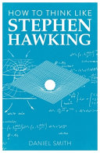 | How to Think Like Stephen Hawking DescriptionUndoubtedly the most famous scientist on the planet and the very face of physics over the last half-century, Stephen Hawking is remarkable for many reasons, not least because he has continued to strive to achieve so much while being hamstrung by debilitating illness. He has demonstrated categorically that if you put your mind to it, you can achieve anything, no matter your physical state. Of course, it helps if you happen to possess a mind such as his. His work on black holes put him on the map, and he became globally famous for his A Brief History of Time , communicating the most difficult scientific ideas at a period when he’d lost the ability to speak. How to Think Like Stephen Hawking reveals the key motivations, desires, and philosophies that make Hawking one of the world’s most enduring talents. Studying how he overcame great adversity, fought his demons as well as his detractors, and looked back to the origins of the universe, and with quotes and passages by and about him, you too can learn to think like the man who claims he can think in 11 dimensions. | Non-fiction | Very Good | DKK 50 | View on Vinted → |
 | I'm Afraid Debbie From Marketing Has Left for the Day - How to Use Behavioural Design to Create Change in the Real World DescriptionWith more than 50,000 copies sold in Denmark, this book has been on the bestseller list since its publication in 2017. Barack Obama used a secret competitive advantage to win two elections. Companies such as Google, Amazon and Novo Nordisk use the same insight to stir up innovation, increase compliance, improve the work environment and sell more products. And successful management groups in the C20 index have started using it as their preferred strategy. But what kind of insight are we talking about here? The answer is – behavioural design. Because people in the real world don’t actually behave like the people we build all our usual strategies for. We are opposing human biology and psychology when we insist that good arguments, burning platforms, classic change management, pamphlets, campaigns, and joint meetings are the way to go. Obama, Google and all the rest have instead opted to use an evidence-based approach to change behaviour, and when you’ve read I’m Afraid Debbie From Marketing Has Left for the Day, you can adopt this approach as well. In his book, Morten Münster has converted 40 years of research in human behaviour into an easily accessible method composed of four steps – a helping hand to all managers and employees who are thirsting for alternatives to conventional means. | Non-fiction | Very Good | DKK 100 | View on Vinted → |
 | Insurgent DescriptionDivergent #2 The thrilling second book in the internationally bestselling Divergent series that inspired a series of major motion pictures starring Shailene Woodley. This special 10th anniversary edition features exclusive content from Veronica Roth and a beautiful reimagined cover art from award-winning illustrator Victo Ngai. As war surges in the factions of dystopian Chicago all around her, Tris attempts to save those she loves - and herself - while grappling with haunting questions of grief and forgiveness, identity and loyalty, politics and love. In times of war sides must be chosen, secrets will emerge, and choices will become ever more irrevocable. Radical new discoveries and shifting relationships mean that Tris must fully embrace her Divergence - even though she cannot know what might be lost in doing so. Bestselling author Veronica Roth's second book continues the dystopian thrill ride that began in Divergent trilogy. Genres Young Adult Dystopia Fantasy Fiction Science Fiction Romance Adventure | Kids & young adults | Good | DKK 40 | View on Vinted → |
 | Integrative Gestalt Practice - Transforming our Ways of Working with People DescriptionIntegrative Gestalt Practice (IGP) is a new approach to understanding and working with complexity and wholeness in people's lives. Amongst the many published books on the market today focusing on the need for specialization and manualization, this book introduces an alternative approach to working professionally with people. By combining basic principles from the gestalt-approach with basic elements of integral theory introduced by Ken Wilber, IGP develops a frontline framework for integrating different forms of theoretical and practical knowledge of human life-processes. This, for instance, can sustain the integration of various psychotherapeutic approaches, and - on a more general level - raise a more common capacity for perspective taking and meaningful disagreements between people.The book shows in various ways how concepts of field theory, self-regulation, contact, awareness and creative experimentation can be directly applied in working with people. The IGP model can be used in many different contexts: in therapy, organisational work, coaching and pedagogy. The book contains a rich combination of theoretical elaborations and practical exercises. It will provide new insights for students, professionals and others with an interest in understanding and working with people. | Non-fiction | Very Good | DKK 150 | View on Vinted → |
 | Joshua Weissman: An Unapologetic Cookbook Description#1 NEW YORK TIMES BESTSELLER A Weissman once said… "...can we please stop with the barrage of 2.3 second meals that only need 1 ingredient? I get it…we’re busy. But let’s refocus on the fact that beautifully crafted burgers don't grow on trees." Ironically this sounds a lot like he's trying to convince you to cook, but he's really not. Is this selling the cookbook? The point is that the food in this book is an invitation that speaks for itself. Great cooking does, and should, take time. Now is the time to double down and get your head in the cooking game. Or you know, don't. Maybe get someone else to cook this stuff for you...that works too. How can you know if something is your favorite if 50 to 80 percent of the stuff you've been eating was made by someone else? Butter, condiments, cheese, pickles, patties, and buns. For a superior and potentially even life-changing experience, you can (and should, to be honest) make these from scratch. Create the building blocks necessary to make the greatest meal of your life. While you're at it, give it the Joshua Weissman—or your own—twist. As Joshua would say, “If you don’t like blue cheese, then don’t use blue cheese.” From simple staples to gourmet to deep-fried, you are the master of your own kitchen, and you'll make it all, on your terms. With no regrets, excuses, or apologies, Joshua Weissman will instruct you how with his irreverent humor, a little bit of light razzing, and over 100 perfectly delectable recipes. If you love to host and entertain; if you like a good project; if you crave control of your food; if fast food or the frozen aisle or the super-fast-super-easy cookbook keep letting your tastebuds down; then Joshua Weissman: An Unapologetic Cookbook is your ideal kitchen companion. *#1 New York Times Bestseller - September 2021 | Non-fiction | Very Good | DKK 160 | View on Vinted → |
 | Junk DNA DescriptionFor decades after identifying the structure of DNA, scientists focused only on genes, the regions of the genome that contain codes for the production of proteins. Other regions that make up 98% of the human genome were dismissed as "junk," sequences that serve no purpose. Yet recently researchers have discovered variations and modulations in this junk DNA that underwrite a number of intractable diseases. This knowledge has led to innovative research and treatment approaches that may finally control these conditions. Junk DNA can play vital and unanticipated roles in the control of gene expression, from fine-tuning individual genes to switching off entire chromosomes. Its function has forced scientists to revisit the very meaning of the word "gene" and has engendered a bitter battle over whether or not this genomic "nonsense" is the source of human biological complexity. Drawing on her experience with leading investigators in Europe and North America, Nessa Carey provides a clear and compelling introduction to junk DNA and its critical involvement in phenomena as diverse as genetic diseases, viral infections, sex determination in mammals, disease treatments, and evolution. We are only now unlocking the secrets of junk DNA, and Carey's book is an indispensable resource for navigating the codes and controversies of this fast-growing and hotly disputed field. | Non-fiction | Satisfactory | DKK 45 | View on Vinted → |
 | Kafka på stranden DescriptionHardcover Beskrivelse På sin femtenårs fødselsdag stikker Kafka Tamura af hjemmefra. Blandt de få ting, han tager med, er et fotografi af ham selv og hans storesøster fra dengang, han var tre år, og hun var ni. De sidder på en strand og ler lykkeligt. Men Kafka kan slet ikke huske, at han har været lykkelig. Han har hverken set sin mor eller sin søster siden dengang, og hans far – som han nu flygter fra – har plantet en sælsom spådom hos ham. ”KAFKA PÅ STRANDEN er Romankunst med stort R – komplekst, fabulerende, mangestemmigt, dybt, og slet, slet ikke til at lægge fra sig, når man får begyndt.” Per Krogh Hansen, Berlingske Tidende Haruki Murakami er født i Kyoto i 1949. Han fik sit internationale gennembrud med romanen Trækopfuglens Krønike, og siden er hans popularitet steget til kultagtige højder i hele verden, senest med den store romantrilogi 1Q84. I 2006 modtog han Franz Kafka-prisen, der også er blevet kaldt ‘den lille nobelpris’. | Fiction | Very Good | DKK 75 | View on Vinted → |
 | Keep It Vegan Description100 delicious recipes and straightforward tips to help you discover the best of vegan food. Áine Carlin's Keep it Vegan demystifies veganism, with more than 100 delicious yet simple recipes that use standard grocery store ingredients. Her creative ideas will tempt long-time vegans and newcomers alike, and even meat eaters and dairy fans won't feel they're missing out. Chapters include Breakfast, Brunch & More, Midday Meals & Simple Dinners, Something Special, and Sweet Treats, and with dishes ranging from Toasted Breakfast Burritos or Smoky Moroccan Stew to Fudgy Brownies, it's time to enjoy the taste-and health benefits-of vegan food. Keep it Vegan proves it is possible to be vegan without compromising on taste, cost, or time, with easy-to-find ingredients and simple yet delicious recipes. | Non-fiction | Very Good | DKK 40 | View on Vinted → |
 | Let Me Tell You What I Mean DescriptionBringing together twelve prescient pieces from the earlier part of the iconic writer’s career, Let Me Tell You What I Mean invites the reader on a journey across America's cultural and political landscape through Didion’s visionary gaze. Twelve early pieces never before collected that offer an illuminating glimpse into the mind and process of Joan Didion. Mostly drawn from the earliest part of her astonishing five-decade career, the wide-ranging pieces in this collection include Didion writing about a Gamblers Anonymous meeting, a visit to San Simeon, and a reunion of WWII veterans in Las Vegas, and about topics ranging from Nancy Reagan to Robert Mapplethorpe to Martha Stewart. Here are subjects Didion has long written about - the press, politics, California robber baronsac, women, the act of writing, and her own self-doubt. Each piece is classic Didion: incisive and, in new light, stunningly prescient. Genres Nonfiction Essays Memoir Short Stories Writing Feminism | Non-fiction | Good | DKK 75 | View on Vinted → |
 | LGBTI Trade Union Work: Experiences and Perspectives DescriptionMichiel Odijk is a retired generalist who likes to dive into the details - with a broad interest into politics, the role of trade unions in preventing and combating discrimination (especially if it comes to discrimination based on sexual orientation or gender identity) and politics. He used to work on physical planning, water management and environmental issues, recreational policies, archaeology/cultural history and monuments, languages. He is passionate about writing and editing and has been doing this since he started a school paper at primary school. Although trained in biology, he loves working with languages and uses this passion to help new-comers to the Netherlands to strengthen their position by using the proper words and phrases in specific circumstances. His book on LGBT(I) trade union work has been published in English and Spanish (1st and 2nd edition) and has seen an updated 3rd edition (in English) in 2020 when cooperating with the Danish trade union organisation FIU Ligestilling. | Non-fiction | Good | DKK 40 | View on Vinted → |
 | Light on Yoga The Definitive Guide To Yoga Practice DescriptionLight On Yoga is a classic text on the philosophy and practice of Yoga .Light On Yoga is a definitive guide about Yoga, a rigorous discipline for attaining physical, mental, and spiritual well-being. It is aimed at beginners as well as advanced practitioners of Yoga. The book begins a foreword by Yehudi Menhuin, a famous violinist and a friend of the author. It is divided into three parts. The first part contains an introduction to Yoga, tracing its historical origin to ancient India. The second part is dedicated to yogasanas, bandhas, and kriyas. It covers numerous asanas or poses in great detail. Each asana is illustrated by a photograph. This is followed by step-by-step instructions that will help with perfecting the asana. The benefits of each pose, the ailments it cures, and the precautions it requires are also included. The third part of the book is dedicated to the concept of Pranayama, a form of yogic breathing. It covers the technique of pranayama, its precautions, its effects, and its types. The book ends with two appendices. The first one provides the sequence in which the asanas are to be performed. The second appendix recommends specific asanas for targeting and curing specific diseases. Light On Yoga was first published in 1966. Since then, it has been considered to be a must-have for serious practitioners of Yoga. | Non-fiction | Good | DKK 85 | View on Vinted → |
 | Little Brother DescriptionMarcus, a.k.a "w1n5t0n," is only seventeen years old, but he figures he already knows how the system works–and how to work the system. Smart, fast, and wise to the ways of the networked world, he has no trouble outwitting his high school's intrusive but clumsy surveillance systems. But his whole world changes when he and his friends find themselves caught in the aftermath of a major terrorist attack on San Francisco. In the wrong place at the wrong time, Marcus and his crew are apprehended by the Department of Homeland Security and whisked away to a secret prison where they're mercilessly interrogated for days. When the DHS finally releases them, Marcus discovers that his city has become a police state where every citizen is treated like a potential terrorist. He knows that no one will believe his story, which leaves him only one option: to take down the DHS himself. Genres Young Adult Science Fiction Fiction Dystopia Cyberpunk | Fiction | Good | DKK 50 | View on Vinted → |
 | Long Island Description'Heartbreak, wistfulness, cracking dialogue . . . This is Tóibín at his best' - The Times 'A masterful novel full of longing and regret . . . Intensely moving and yet full of restraint' - Douglas Stuart, author of Shuggie Bain OPRAH'S BOOK CLUB PICK AS HEARD ON BBC RADIO 4 Long Island is Colm Tóibín's masterpiece: an exquisite, exhilarating novel that asks whether it is possible to truly return to the past and renew the great love that seemed gone forever. The sequel to Colm Tóibín's prize-winning, bestselling novel Brooklyn. A man with an Irish accent knocks on Eilis Fiorello's door on Long Island and in that moment everything changes. Eilis and Tony have built a secure, happy life here since leaving Brooklyn - perhaps a little stifled by the in-laws so close, but twenty years married and with two children looking towards a good future. And yet this stranger will reveal something that will make Eilis question the life she has created. For the first time in years she suddenly feels very far from home and the revelation will see her turn towards Ireland once again. Back to her mother. Back to the town and the people she had chosen to leave behind. Did she make the wrong choice marrying Tony all those years ago? Is it too late now to take a different path? | Fiction | Good | DKK 40 | View on Vinted → |
 | Love Forms DescriptionLonglisted for the Booker Prize 2025 A heart-stirring novel about a mother's love, in all its forms, as a woman searches for the daughter she gave up for adoption when she was a teenager growing up in the Caribbean, from the prize-winning author of Golden Child. For much of her life, Dawn has felt as if something had been missing. Now, at the age of fifty-eight, with a divorce behind her and her two grown-up sons busy with their own lives, she should be trying to settle into a new future for herself. But she keeps returning to the past and to the secret she’s kept all these years. At just sixteen, Dawn found herself pregnant, and—as was common in Trinidad back then—her parents sent her away to have the baby and give her up for adoption. More than forty years later, Dawn yearns to reconnect with her lost daughter. But tracking down her child is not as easy as she had thought. It’s an emotional journey that leads Dawn to retrace her steps back home and to question not only that fateful decision she’d made as a teenager but every turn in the road of her life since. Love Forms is a powerfully moving story of a woman in search of herself—a novel that rings with heartfelt empathy through the passages of a mother’s life, depicting the enduring bonds of love, family, and home. Genres Fiction Literary Fiction Contemporary Family Historical Fiction Adoption Format 298 pages, Hardcover Published June 19, 2025 by Faber & Faber | Fiction | Very Good | DKK 80 | View on Vinted → |
 | Loveability Description"Love is your destiny. It is the purpose of your life. It is the key to your happiness and to the evolution of the world." Loveability is a meditation on love. It addresses the most important thing you will ever learn. All the happiness, health and abundance you experience in life comes from your ability to love and be loved. This ability is innate, not acquired. Robert Holden is the creator of a unique programme on love called Loveability, which he teaches worldwide. Using this three-day public programme, he has helped thousands of people to transform their experience of love. 'Love is the real work of your life,' says Robert. 'As you release the blocks to love you flourish even more in your relationships, work, and life.' In Loveability, Robert weaves a beautiful mix of timeless principles and helpful practices about the nature of true love. With great intimacy and warmth, he shares stories, conversations, meditations and poetry that have inspired him in his personal inquiry on love. Key themes include: * Your destiny is not just to find love; it is to be the most loving person you can be. * Self-love is how you are meant to feel about yourself. It is the key to loving others. * When you think something is missing in a relationship, it is probably you. * Forgiveness helps you to see that love has never hurt you; it is only your misperceptions of love that hurt. * The greatest influence you can have in any situation is to be the presence of love. | Non-fiction | Very Good | DKK 50 | View on Vinted → |
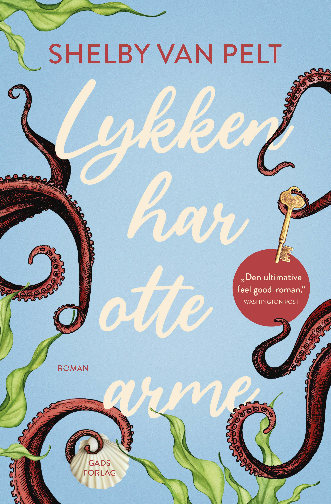 | Lykken har otte arme DescriptionENG: Remarkably Bright Creatures Et usædvanligt venskab mellem en ældre kvinde og en blæksprutte giver dem begge et glimt af håb for fremtiden. Siden hun blev enke, har Tova Sullivan arbejdet som rengøringsassistent på det lokale akvarium i Sowell Bay hver aften efter lukketid. Selvom hun egentlig har nået pensionsalderen, kan hun godt lide at holde sig beskæftiget, og efter at hendes søn forsvandt sporløst på en sejltur for over 30 år siden, har det været den eneste måde for hende at holde sig oven vande på. En aften bemærker hun, at akvariets kloge, gamle kæmpestillehavsblæksprutte, Marcellus, holder øje med hende. Marcellus seralt, men kunne ikke drømme om at løfte en af sine otte arme for de mennesker, der holder ham fanget i akvariet – indtil han møder Tova. Klog som han er, opdager Marcellus nemlig, hvad der skete med Tovas søn den nat, han forsvandt. Og snart har han armene fulde med også at få Tova til at indse, hvad der skete dengang. Før det er for sent. | Fiction | Very Good | DKK 65 | View on Vinted → |
 | Machine, Platform, Crowd DescriptionFrom the authors of the best-selling The Second Machine Age, a leader’s guide to success in a rapidly changing economy. We live in strange times. A machine plays the strategy game Go better than any human; upstarts like Apple and Google destroy industry stalwarts such as Nokia; ideas from the crowd are repeatedly more innovative than corporate research labs. MIT’s Andrew McAfee and Erik Brynjolfsson know what it takes to master this digital-powered shift: we must rethink the integration of minds and machines, of products and platforms, and of the core and the crowd. In all three cases, the balance now favors the second element of the pair, with massive implications for how we run our companies and live our lives. In the tradition of agenda-setting classics like Clay Christensen’s The Innovator’s Dilemma, McAfee and Brynjolfsson deliver both a penetrating analysis of a new world and a toolkit for thriving in it. For startups and established businesses, or for anyone interested in what the future holds, Machine, Platform, Crowd is essential reading. | Non-fiction | Very Good | DKK 65 | View on Vinted → |
 | Mad Woman: Binge Eating. Menopause. OCD: How To Survive a World That Thinks You're The Problem DescriptionWhat if our notion of what makes us happy is the very thing that's making us so sad? Ten years on from first writing about her own experiences of mental illness, Bryony Gordon still receives messages about the effect it has on people. Now perimenopausal and well into the next stage of her life, parenting an almost-adolescent, just what has that help - and that connection with other unwell people - taught Bryony about herself, and the society we live in? What has she learned, and why have her views on mental health changed so radically? After coming out the other side of the biggest trauma of our living memory - a global pandemic - existing in a state of perma-crisis has now become our new normal. From burnout and binge eating, to living with fluctuating hormones and the endless battle to stay sober, Bryony begins to question whether she got mental illness wrong in the first place. Is it simply a chemical imbalance, or rather a normal response from your brain telling you that something isn't right? Mad Woman explores the most difficult of all the lessons she's learned over the last decade - that our notion of what makes a happy life is the very thing that's making us so sad. | Non-fiction | Very Good | DKK 60 | View on Vinted → |
 | Managing Projects Large and Small DescriptionManaging Projects Large and Small: The Fundamental Skills for Delivering on Cost and On Time When it comes to project management, success lies in the details. This book walks managers through every step of project oversight from start to finish. Thanks to the book's comprehensive information on everything from planning and budgeting to team building and after-project reviews, managers will master the discipline and skills they need to achieve stellar results without wasting time and money. The Harvard Business Essentials series is for managers at all levels but is especially relevant for new managers. It offers on-the-spot guidance, coaching, and tools on the most relevant topics in business. Each book includes the critical information that managers need on a given topic-from budgeting to hiring to communication to strategy-and offers interactive tools and worksheets that translate advice into action. Providing ready answers to day-to-day issues, these guides make sound, trusted mentoring advice available whenever managers need it. Other Books in the HBE Series: Managing Change and Transition Hiring and Keeping the Best People Finance for Managers Business Communications Innovation Negotiation | Non-fiction | Good | DKK 50 | View on Vinted → |
 | Mindfulness & the Art of Managing Anger DescriptionMindfulness & the Art of Managing Anger explores the powerful emotion of toxic anger - what it is, why we experience it and how we can learn to control its destructive power through the very nature of mindfulness. Fusing Western and Buddhist thought, therapeutic tools, specific meditative practices and frank personal anecdotes, this book reveals how we can all clear the red mist for peaceful wellbeing. | Non-fiction | Good | DKK 50 | View on Vinted → |
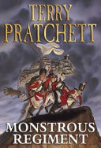 | Monstrous Regiment DescriptionA new stage adaptation of one of Pratchett's best-selling novels The Monstrous Regiment in question is made up of a vampire (reformed and off the blood, thank you), a troll, Igor (who is only too happy to sew you a new leg if you aren't too particular about previous ownership), a collection of misfits and a young woman discovers that a pair of socks shoved down her pants is a good way to open up doors in a man's army. "One of the funniest English authors alive" (Independent) Genres Fantasy Plays Humor "Mate gender politics with geopolitics and you get either a PC nightmare or something very funny. Fortunately, in "Monstrous Regiment," it's the latter."--"Washington Post Book World." | Fiction | Very Good | DKK 60 | View on Vinted → |
 | Mr Wilder and Me DescriptionIn the heady summer of 1977, a naïve young woman called Calista sets out from Athens to venture into the wider world. On a Greek island that has been turned into a film set, she finds herself working for the famed Hollywood director Billy Wilder, about whom she knows almost nothing. But the time she spends in this glamorous, unfamiliar new life will change her for good. While Calista is thrilled with her new adventure, Wilder himself is living with the realisation that his star may be on the wane. Rebuffed by Hollywood, he has financed his new film with German money, and when Calista follows him to Munich for the shooting of further scenes, she finds herself joining him on a journey of memory into the dark heart of his family history. In a novel that is at once a tender coming-of-age story and an intimate portrait of one of cinema's most intriguing figures, Jonathan Coe turns his gaze on the nature of time and fame, of family and the treacherous lure of nostalgia. When the world is catapulting towards change, do you hold on for dear life or decide it's time to let go? | Fiction | Very Good | DKK 40 | View on Vinted → |
 | Nanna Ditzel DescriptionNanna Ditzel blev uddannet møbelsnedker i 1943 og derfra, som de fleste andre møbeldesignere videre til Kunsthåndværkerskolen hvor hun blev uddannet møbelarkitekt i 1946. I 1946 startede hun, sammen med sin mand Jørgen Ditzel, en designvirksomhed hvor de sammen designede møbler, tekstiler mv. Nanna Ditzel har designet smykker til blandt andet Georg Jensen, samt møbler. Hun er især kendt for Trinidadstolen og Trissen. Nanna Ditzel har bl.a. arbejdet sammen med forskellige producenter, som bl.a. Kolds Savværk, Søren Willadsen i Vejen og Fredericia Furniture. Poul Erik Tøjner er hovedredaktør af serien Danske Designere. | Non-fiction | Very Good | DKK 75 | View on Vinted → |
 | On Beauty DescriptionSet in New England mainly and London partly, On Beauty concerns a pair of feuding families - the Belseys and the Kipps - and a clutch of doomed affairs. It puts low morals among high ideals and asks some searching questions about what life does to love. For the Belseys and the Kipps, the confusions - both personal and political - of our uncertain age are about to be brought close to home: right to the heart of family. | Fiction | Good | DKK 30 | View on Vinted → |
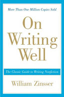 | On Writing Well, 30th Anniversary Edition DescriptionOn Writing Well has been praised for its sound advice, its clarity and the warmth of its style. It is a book for everybody who wants to learn how to write or who needs to do some writing to get through the day, as almost everybody does in the age of e-mail and the Internet. Whether you want to write about people or places, science and technology, business, sports, the arts or about yourself in the increasingly popular memoir genre, On Writing Well offers you fundamental priciples as well as the insights of a distinguished writer and teacher. With more than a million copies sole, this volume has stood the test of time and remains a valuable resource for writers and would-be writers. | Non-fiction | Very Good | DKK 90 | View on Vinted → |
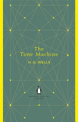 | Penguin English Library the Time Machine DescriptionThe Penguin English Library Edition of The Time Machine by H. G. Wells 'Great shapes like big machines rose out of the dimness, and cast grotesque black shadows, in which dim spectral Morlocks sheltered from the glare' Chilling, prophetic and hugely influential, The Time Machine sees a Victorian scientist propel himself into the year 802,701 AD, where he is delighted to find that suffering has been replaced by beauty and contentment in the form of the Eloi, an elfin species descended from man. But he soon realizes that they are simply remnants of a once-great culture - now weak and living in terror of the sinister Morlocks lurking in the deep tunnels, who threaten his very return home. H. G. Wells defined much of modern science fiction with this 1895 tale of time travel, which questions humanity, society, and our place on Earth. The Penguin English Library - 100 editions of the best fiction in English, from the eighteenth century and the very first novels to the beginning of the First World War. | Fiction | Very Good | DKK 50 | View on Vinted → |
 | Physics of semiconductor devices DescriptionAppropriate for Sr or first year grad. courses on device physics. Theories and models presented in book are implemented in microcomputer programs used for modelling these devices. Includes over 150 problems. | Textbooks & study materials | Good | DKK 115 | View on Vinted → |
 | Pilgrimsrejsen DescriptionPilgrimsrejsen, som er Paulo Coelhos første bog, indtager en helt speciel plads i Paulo Coelhos forfatterskab. Den er skrevet i 1987 - før den verdensomspændende succes ´Alkymisten´ Drevet af et ønske om at opnå selvindsigt og forstå livets gang bevæger forfatteren sig ud på en rejse, der vil komme til at ændre hans liv for altid. I denne originale og tankevækkende fortælling følger vi ham på hans vandring ad den myteomspundne pilgrimsrute til Santiago de Compostela.På sin lange vej gennem det spanske landskab udsættes han for en række prøvelser, som lærer ham at sandheden og det ekstraordinære altid findes i det enkle. Her formulerer Paulo Coelho for første gang den livsfilosofi, som han har gjort til sit kald at videreformidle .“Det er netop gået op for mig, at jeg ikke længere kan tage og gøre det, jeg gjorde før. Jeg må forandre mig. Gå i retning af min drøm.” – Paulo CoelhoPaulo Coelho (f. 1947 i Rio de Janeiro) er en af verdens mest læste forfattere. Mest kendt er han for Alkymisten, som har solgt over 65 mio. eksemplarer i mere end 156 lande og er oversat til 71 sprog. Den er således blandt Verdenshistoriens bedstsælgende bøger, hvilket har givet Coelho ”prisen” i Guinness’ Rekordbog som den mest oversatte bog af en nutidig forfatter. Han regnes for en af vor tids mest indflydel-sesrige personer (har fx deltaget ti gange i World Economic Forum, Davos, Schweiz). | Fiction | Good | DKK 25 | View on Vinted → |
 | Platform Revolution DescriptionA practical guide to the new economy that is transforming the way we live, work, and play. Uber. Airbnb. Amazon. Apple. PayPal. All of these companies disrupted their markets when they launched. Today they are industry leaders. What’s the secret to their success? These cutting-edge businesses are built on platforms: two-sided markets that are revolutionizing the way we do business. Written by three of the most sought-after experts on platform businesses, Platform Revolution is the first authoritative, fact-based book on platform models. Whether platforms are connecting sellers and buyers, hosts and visitors, or drivers with people who need a ride, Geoffrey G. Parker, Marshall W. Van Alstyne, and Sangeet Paul Choudary reveal the what, how, and why of this revolution and provide the first “owner’s manual” for creating a successful platform business. Platform Revolution teaches newcomers how to start and run a successful platform business, explaining ways to identify prime markets and monetize networks. Addressing current business leaders, the authors reveal strategies behind some of today’s up-and-coming platforms, such as Tinder and SkillShare, and explain how traditional companies can adapt in a changing marketplace. The authors also cover essential issues concerning security, regulation, and consumer trust, while examining markets that may be ripe for a platform revolution, including healthcare, education, and energy. As digital networks increase in ubiquity, businesses that do a better job of harnessing the power of the platform will win. An indispensable guide, Platform Revolution charts out the brilliant future of platforms and reveals how they will irrevocably alter the lives and careers of millions. | Non-fiction | Satisfactory | DKK 45 | View on Vinted → |
 | Plato Republic DescriptionTranslated, with Introduction and notes by Francis MacDonald Cornford The central work of one of the West's greatest philosophers, The Republic of Plato is a masterpiece of insight and feeling, the finest of the Socratic dialogues, and one of the great books of Western culture. This new translation captures the dramatic realism, poetic beauty, intellectual vitality, and emotional power of Plato at the height of his powers. Deftly weaving three main strands of argument into an artistic whole--the ethical and political, the aesthetic and mystical, and the metaphysical--Plato explores in The Republic the elements of the ideal community, where morality can be achieved in a balance of wisdom, courage, and restraint. The Republic by Plato is a timeless dialogue that examines the meaning of justice, the structure of the ideal state, and the nature of truth and knowledge. As Socrates leads the conversation, readers are drawn into profound discussions that remain astonishingly relevant even today. With enduring allegories like the Cave and the tripartite theory of the soul, The Republic isn’t just political philosophy, it’s a guide to living a meaningful life. A blueprint for justice, truth, and the ideal society. Explore the foundations of political thought and ethical philosophy. Delve into powerful allegories like the Cave and the divided line. Reflect on personal justice and the soul's structure. Engage with Socratic reasoning through rich, thought-provoking dialogue. Discover the roots of democracy, education, and leadership. Perfect For Philosophy enthusiasts and classic literature lovers. Students of politics, ethics, and human behavior. Readers seeking mental stimulation and timeless truths. Lessons for Modern Times Relevance of truth and justice in today’s political climate. Importance of reasoned debate and ethical governance. Role of education in shaping responsible citizens. | Non-fiction | Good | DKK 140 | View on Vinted → |
 | Politiets hemmelige våben Mine 40 år blandt mordere og meddelere DescriptionBenny Frederiksen var 24 år og politibetjent på prøve, da han en mørk aften i oktober 1980 blev første mand på gerningsstedet i den bestialske sag om drabet på en af Simon Spies’ tidligere morgenbolledamer, Michelle Anderson. Det blev begyndelsen på den røde tråd i et politiliv, som kom til at handle om kunsten at hverve hemmelige meddelere og opklare sager om alt fra skjulte hashtunneler på Christiania til Snapchatdrabet i Gentofte. Gennem 40 år perfektionerede Benny sit talent for at få den danske underverden i tale, og i sin erindringsbog tager han læseren med på en enestående rejse gennem nyere kriminalhistorie, fra Uropatruljen til Rejseholdet og afdelingen for organiseret kriminalitet. Mellem de grumme og alvorlige kriminalsager tegner Benny Frederiksens også et farverigt og fascinerende portræt af en tid i dansk politi, som ikke er mere. Han knappede sin første uniform i en tid, hvor cheferne var veteraner fra krigens tid, der havde siddet i koncentrationslejr og ordnede politiforretninger bevæbnet med porter og cigar. Han var ung betjent med moderigtigt overskæg, dengang uniformen var en livsstil, og en rigtig politimand ikke sjældent havde tre-fire forliste ægteskaber på samvittigheden. Og han ser tilbage på sin tid i Uropatruljen og Rejseholdet, hvor han fik venner for livet og opklarede ”sine” største sager sammen med de bedste efterforskere i faget; blandt andet mordet på 12-årige Mia, der rystede Danmark; Sonay-drabet, Danmarks første store sag om æresdrab; og det store våbenkup på Antvorskov Kaserne. | Non-fiction | Very Good | DKK 120 | View on Vinted → |
Prowadź swój pług przez kości umarłych DescriptionInspirująca, głośno dyskutowana powieść. Thriller moralny z metafizyczną zagadką, zaskakującą pod każdym względem. Zimą piękna Kotlina Kłodzka jest miejscem mało przyjaznym i opustoszałym. Wsród nielicznych mieszkańców pozostała Janina Duszejko - miłośniczka astrologii, która w wolnych chwilach dogląda domów nieobecnych sąsiadów i tłumaczy poezję Blake'a. Niespodziewanie przez tę spokojną okolicę przetacza się fala morderstw, których ofiarami padają myśliwi. Czy to możliwe, by - jak sugeruje Duszejko - to zwierzęta zaczęły czyhać na życie swoich oprawców? Wszak Blake pisał: "Błąkająca się Sarna po lesie / Ludzkiej Duszy niepokój niesie"... | Fiction | Good | DKK 50 | View on Vinted → | |
 | Purple Cow DescriptionYou're either a Purple Cow or you're not. You're either remarkable or invisible. Make your choice. What do Apple, Starbucks, Dyson and Pret a Manger have in common? How do they achieve spectacular growth, leaving behind former tried-and-true brands to gasp their last? The old checklist of P's used by marketers - Pricing, Promotion, Publicity - aren't working anymore. The golden age of advertising is over. It's time to add a new P - the Purple Cow."Purple Cow" describes something phenomenal, something counterintuitive and exciting and flat-out unbelievable. In his new bestseller, Seth Godin urges you to put a Purple Cow into everything you build, and everything you do, to create something truly noticeable. It's a manifesto for anyone who wants to help create products and services that are worth marketing in the first place. | Non-fiction | Very Good | DKK 50 | View on Vinted → |
 | Quit Like a Woman DescriptionThe founder of the first female-focused recovery program offers a groundbreaking look at alcohol and a radical new path to sobriety. We live in a world obsessed with drinking. We drink at baby showers and work events, brunch and book club, graduations and funerals. Yet no one ever questions alcohol’s ubiquity—in fact, the only thing ever questioned is why someone doesn’t drink. It is a qualifier for belonging and if you don’t imbibe, you are considered an anomaly. As a society, we are obsessed with health and wellness, yet we uphold alcohol as some kind of magic elixir, though it is anything but. When Holly Whitaker decided to seek help after one too many benders, she embarked on a journey that led not only to her own sobriety, but revealed the insidious role alcohol plays in our society and in the lives of women in particular. What’s more, she could not ignore the ways that alcohol companies were targeting women, just as the tobacco industry had successfully done generations before. Fueled by her own emerging feminism, she also realized that the predominant systems of recovery are archaic, patriarchal, and ineffective for the unique needs of women and other historically oppressed people—who don’t need to lose their egos and surrender to a male concept of God, as the tenets of Alcoholics Anonymous state, but who need to cultivate a deeper understanding of their own identities and take control of their lives. When Holly found an alternate way out of her own addiction, she felt a calling to create a sober community with resources for anyone questioning their relationship with drinking, so that they might find their way as well. Her resultant feminine-centric recovery program focuses on getting at the root causes that lead people to overindulge and provides the tools necessary to break the cycle of addiction, showing us what is possible when we remove alcohol and destroy our belief system around it. Written in a relatable voice that is honest and witty, Quit Like a | Non-fiction | Very Good | DKK 60 | View on Vinted → |
 | Sandworm DescriptionThe true story of the most devastating act of cyberwarfare in history and the desperate hunt to identify and track the elite Russian agents behind "[A] chilling account of a Kremlin-led cyberattack, a new front in global conflict" ( Financial Times ). In 2014, the world witnessed the start of a mysterious series of cyberattacks. Targeting American utility companies, NATO, and electric grids in Eastern Europe, the strikes grew ever more brazen. They culminated in the summer of 2017, when the malware known as NotPetya was unleashed, penetrating, disrupting, and paralyzing some of the world's largest businesses—from drug manufacturers to software developers to shipping companies. At the attack's epicenter in Ukraine, ATMs froze. The railway and postal systems shut down. Hospitals went dark. NotPetya spread around the world, inflicting an unprecedented ten billion dollars in damage—the largest, most destructive cyberattack the world had ever seen. The hackers behind these attacks are quickly gaining a reputation as the most dangerous team of cyberwarriors in a group known as Sandworm. Working in the service of Russia's military intelligence agency, they represent a persistent, highly skilled force, one whose talents are matched by their willingness to launch broad, unrestrained attacks on the most critical infrastructure of their adversaries. They target government and private sector, military and civilians alike. A chilling, globe-spanning detective story, Sandworm considers the danger this force poses to our national security and stability. As the Kremlin's role in foreign government manipulation comes into greater focus, Sandworm exposes the realities not just of Russia's global digital offensive, but of an era where warfare ceases to be waged on the battlefield. It reveals how the lines between digital and physical conflict, between wartime and peacetime, have begun to blur—with world-shaking implications. | Fiction | Satisfactory | DKK 33 | View on Vinted → |
 | SEAHORSE. DescriptionNem is a student of English literature at Delhi University. He drifts between classes, weed-hazy parties, and the amorous complexities of campus life, until a chance encounter with an art historian steers him into a world of pleasure and artistic discovery. Nem’s life is irrevocably transformed. One day, without warning, his mentor disappears. In the years that follow, Nem cocoons himself in South Delhi, writing for a chic cultural journal. When he is awarded a fellowship to London, a cryptic note plunges him into a search for the art historian—a search which turns into a reckoning with his past. Retelling the myth of Poseidon and his youthful male devotee Pelops, Seahorse transforms a simple coming-of-age story into an epic drama of loss, love, and healing. Genres LGBT Fiction Gay India Contemporary Indian Literature 304 pages, Hardcover | Fiction | Very Good | DKK 65 | View on Vinted → |
 | Skærmsund - En 4-ugers guide til sundere skærmvaner i familien Description'SKÆRMSUND' er en banebrydende bog, der byder på en omfattende 4-ugers guide til at forbedre trivsel, øge nærværet og kultivere sundere skærmvaner i hverdagen. Forfatterne Imran Rashid, Katja Bamberger Bro og Marie Brixtofte deler deres ekspertise gennem praktiske værktøjer og indsigter baseret på den nyeste forskning inden for digital sundhed. Dette værk er ideelt for forældre, der ønsker at håndtere familiens skærmforbrug mere effektivt, og indeholder strategier til at integrere sunde alternativer til skærmtid, herunder sjove fysiske aktiviteter og familieorienterede interaktioner. 'SKÆRMSUND' tilbyder ikke kun løsninger til at mindske skærmtiden, men også metoder til at etablere en mere bevidst og afbalanceret tilgang til digitale enheder. Forfatterne Imran Rashid, Katja Bamberger Bro og Marie Brixtofte hjælper læserne med at implementere tilpassede skærmregler, der respekterer individuelle familiers behov og værdier. For alle, der søger at opnå en sundere digital livsstil uden at skulle 'slå op' med deres enheder, tilbyder 'SKÆRMSUND' værdifulde råd og praktiske løsninger. Skab en sundere digital fremtid for din familie ved at udforske de rige ressourcer i denne bog. Køb dit eksemplar af 'SKÆRMSUND' i dag og tag det første skridt mod et mere nærværende og digitalt sundt familieliv. | Non-fiction | Very Good | DKK 65 | View on Vinted → |
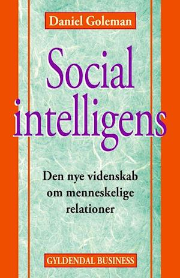 | Social intelligens DescriptionI "Social intelligens" præsenterer adfærdseksperten Daniel Goleman os for spændende viden om menneskets indbyggede sociale intelligens. Ifølge den anerkendte amerikanske ekspert i adfærdsvidenskab har menneskelige relationer en større indflydelse på psykisk og fysisk helbred, end man skulle tro. Med "Social intelligens" viser Daniel Goleman derfor, hvordan vi helt biologisk er i stand til at aflæse andres følelser og tilpasse os derefter. Bogen vil være oplagt læsning for enhver, der beskæftiger sig med at opdrage, uddanne og udvikle andre. | Non-fiction | Good | DKK 60 | View on Vinted → |
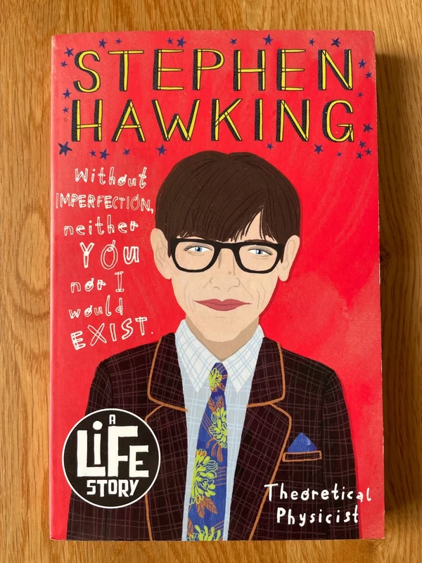 | Stephen Hawking DescriptionStephen Hawking: stargazer, physicist, icon. Award-winning children's author and journalist, Nikki Sheehan, explores the life of the inspirational scientist Stephen Hawking. A Life Story: This gripping series throws the reader directly into the lives of modern society's most influential figures. With striking black-and-white illustration along with timelines and never-heard-before facts. Also in the series: Katherine Johnson: A Life Story Rosalind Franklin: A Life Story Alan Turing: A Life Story | Kids & young adults | Very Good | DKK 40 | View on Vinted → |
 | Straight Jacket: Overcoming Society's Legacy of Gay Shame Description'This is an essential read for every gay person on the planet' - Elton John Straight Jacket is a revolutionary clarion call for gay men, the wider LGBT community, their friends and family. Part memoir, part ground-breaking polemic, it looks beneath the shiny facade of contemporary gay culture and asks if gay people are as happy as they could be – and if not, why not? Meticulously researched, courageous and life-affirming, Straight Jacket offers invaluable practical advice on how to overcome a range of difficult issues. It also recognizes that this is a watershed moment, a piercing wake-up-call-to-arms for the gay and wider community to acknowledge the importance of supporting all young people – and helping older people to transform their experience and finally get the lives they really want. Genres Nonfiction LGBT Queer Gay Self Help | Non-fiction | Very Good | DKK 70 | View on Vinted → |
 | Strategy for Sustainability: A Business Manifesto DescriptionThe definitive work on business strategy for sustainability by the most authoritative voice in the conversation. More than ever before, consumers, employees, and investors share a common purpose and a passion for companies that do well by doing good. So any strategy without sustainability at its core is just plain irresponsible - bad for business, bad for shareholders, bad for the environment. These challenges represent unprecedented opportunities for big brands - such as Clorox, Dell, Toyota, Procter & Gamble, Nike, and Wal-Mart - that are implementing integral , rather than tangential, strategies for sustainability. What these companies are doing illuminates the book's practical framework for change, which involves engaging employees, using transparency as a business tool, and reaping the rewards of a networked organizational structure. Leave your quaint notions of corporate social responsibility and environmentalism behind. Werbach is starting a whole new dialogue around sustainability of enterprise and life as we know it in organizations and individuals. Sustainability is now a true competitive strategic advantage, and building it into the core of your business is the only means to ensure that your company - and your world - will survive. Genres Sustainability Business Nonfiction Environment Green 240 pages, Hardcover | Non-fiction | Good | DKK 45 | View on Vinted → |
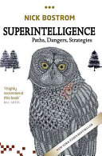 | Superintelligence DescriptionThe human brain has some capabilities that the brains of other animals lack. It is to these distinctive capabilities that our species owes its dominant position. Other animals have stronger muscles or sharper claws, but we have cleverer brains. If machine brains one day come to surpass human brains in general intelligence, then this new superintelligence could become very powerful. As the fate of the gorillas now depends more on us humans than on the gorillas themselves, so the fate of our species then would come to depend on the actions of the machine superintelligence. But we have one advantage: we get to make the first move. Will it be possible to construct a seed AI or otherwise to engineer initial conditions so as to make an intelligence explosion survivable? How could one achieve a controlled detonation? To get closer to an answer to this question, we must make our way through a fascinating landscape of topics and considerations. Read the book and learn about oracles, genies, singletons; about boxing methods, tripwires, and mind crime; about humanity's cosmic endowment and differential technological development; indirect normativity, instrumental convergence, whole brain emulation and technology couplings; Malthusian economics and dystopian evolution; artificial intelligence, and biological cognitive enhancement, and collective intelligence. This profoundly ambitious and original book picks its way carefully through a vast tract of forbiddingly difficult intellectual terrain. Yet the writing is so lucid that it somehow makes it all seem easy. After an utterly engrossing journey that takes us to the frontiers of thinking about the human condition and the future of intelligent life, we find in Nick Bostrom's work nothing less than a reconceptualization of the essential task of our time. | Non-fiction | Very Good | DKK 65 | View on Vinted → |
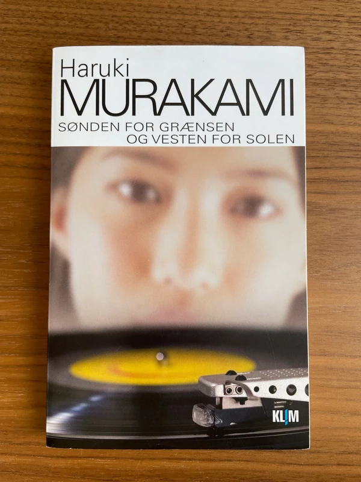 | Sønden for grænsen og vesten for solen DescriptionHajime møder sin eneste ene, pigen Shimamoto, da de begge er tolv år, men han mister hende igen. Han begår den fatale fejl at give slip på hende i teenagealderen for først at møde hende mange år senere, da de begge er kommet op i trediverne. En dag sidder hun pludselig i hans jazzbar, fuld af mystik og hemmeligheder og med dybe sår i sjælen.Hajime opdager, at han stadig er fuldkommen besat af Shimamoto. Hun er alt det, han ikke har kunnet finde i nogen anden kvinde. | Fiction | Very Good | DKK 65 | View on Vinted → |
 | Tales of Hans Christian Andersen DescriptionRediscover thirteen of Andersen's best-loved tales in this definitive edition -- highlighted with introductions by an esteemed translator and illuminated with fanciful artwork from an acclaimed illustrator. Open the pages of this magnificent volume and enter the fairy-tale realm of Hans Christian Andersen! In a playful design that echoes Andersen's passion for miniature theaters, artist Joel Stewart depicts such well-known characters as the pea-sensitive Princess and the unclothed Emperor as actors on a timeless stage. Expert commentary by Naomi Lewis offers historical and biographical points of interest, revealing that "The Steadfast Tin Soldier" is the first fairy tale ever to feature a nonhuman hero (now a hallmark of childrens literature) and that "The Ugly Duckling," considered Andersen's autobiography, is a tale he especially loved to read aloud. In thirteen of his most enduring tales, savor the singular voice of this literary giant -- the "washerwoman's crazy son" who became one of the best-known storytellers of all time. Genres Classics Fairy Tales Childrens | Kids & young adults | Very Good | DKK 50 | View on Vinted → |
 | The Beautiful Creatures Complete Collection DescriptionThere were no surprises in Gatlin County. At least, that's what I thought. Turns out, I couldn't have been more wrong. Ethan Wate used to think of Gatlin, the small Southern town he had always called home, as a place where nothing ever changed. Then he met mysterious newcomer Lena Duchannes, who revealed a secret world where a curse has marked Lena's family of powerful Supernaturals for generations. Mysterious, suspenseful, and romantic, Beautiful Creatures, Beautiful Darkness, Beautiful Chaos, and Beautiful Redemption introduce a secret world hidden in plain sight. A world where impossible, magical, life-altering events happen. Sometimes life-ending. This stunning set makes the perfect gift for fans of this bestselling Southern gothic romance. | Kids & young adults | Good | DKK 130 | View on Vinted → |
 | The Bilingual Brain Description'Fascinating. . . This engaging book explores just how multiple languages are acquired and sorted out by the brain. . . Costa's work derives from a great fund of knowledge, considerable curiosity and solidly scientific spirit' Philip Hensher Spectator The definitive study of bilingualism and the human brain from a leading neuropsychologist Over half of the world's population is bilingual and yet few of us understand how this extraordinary, complex ability really works. How do two languages co-exist in the same brain? What are the advantages and challenges of being bilingual? How do we learn - and forget - a language? In the first study of its kind, leading expert Albert Costa shares twenty years of experience to explore the science of language. Looking at studies and examples from Canada to France to South Korea, The Bilingual Brain investigates the significant impact of bilingualism on daily life from infancy to old age. It reveals, among other things, how babies differentiate between two languages just hours after birth, how accent affects the way in which we perceive others and even why bilinguals are better at conflict resolution. Drawing on cutting-edge neuro-linguistic research from his own laboratory in Barcelona as well from centres across the world, and his own bilingual family, Costa offers an absorbing examination of the intricacies and impact of an extraordinary skill. Highly engaging and hugely informative,The Bilingual Brain leaves us all with a sense of wonder at how language works. Translated by John W. Schwieter | Non-fiction | Very Good | DKK 60 | View on Vinted → |
 | The Brand Bubble DescriptionHow to use brands to gain and sustain competitive advantageCompanies today face a dilemma in marketing. The tried-and-true formulas to create sales and market share behind brands are becoming irrelevant and losing traction with consumers. In this book, Gerzema and LeBar offer credible evidence--drawn from a detailed analysis of a decade's worth of brand and financial data using Y&R's Brand Asset Valuator (BAV), the largest database of brands in the world--that business is riding on yet another bubble that is ready to burst--a brand bubble. While most managers still see metrics like trust and awareness as the backbone of how brands are built, Gerzema asserts they're dead wrong--these metrics do not add to increased asset value. In fact, by following them, they actually hasten the declining value of their brands. Using a five-stage model, "The Brand Bubble" reveals how today's successful brands--and tomorrow's--have an insatiable appetite for creativity and change. These brands offer consumers a palpable sense of movement and direction thanks to a powerful "energized differentiation." Gerzema reveals how brands with energized differentiation achieve better financial performance than traditional brands have. Plus, Gerzema helps readers develop energized differentiation in their own brands, creating consumer-centric and sustainable organizations. | Non-fiction | Very Good | DKK 50 | View on Vinted → |
 | The Carpetbagger: A Novel DescriptionPublished by Laird & Lee, Chicago, 1899 First edition. Decorative green cloth. Illustrated. The Carpetbagger is a thrilling novel that takes readers on a journey through the American South during Reconstruction. Frank Pixley and Opie Percival Read tell the story of a young man who becomes embroiled in the political turmoil of the era. This work has been selected by scholars as being culturally important, and is part of the knowledge base of civilization as we know it. | Fiction | Very Good | DKK 120 | View on Vinted → |
The Collected Poems of W. B. Yeats DescriptionW. B. Yeats was Romantic and Modernist, mystical dreamer and leader of the Irish Literary Revival, Nobel prizewinner, dramatist and, above all, poet. He began writing with the intention of putting his 'very self' into his poems. T. S. Eliot, one of many who proclaimed the Irishman's greatness, described him as 'one of those few whose history is the history of their own time, who are part of the consciousness of an age which cannot be understood without them'. For anyone interested in the literature of the late nineteenth century and the twentieth century, Yeats's work is essential. This volume gathers the full range of his published poetry, from the hauntingly beautiful early lyrics (by which he is still fondly remembered) to the magnificent later poems which put beyond question his status as major poet of modern times. Paradoxical, proud and passionate, Yeats speaks today as eloquently as ever. Genres Poetry Classics Fiction Irish Literature Ireland Literature 20th Century | Fiction | Very Good | DKK 50 | View on Vinted → | |
 | The Craft Beer Revolution: How a Band of Microbrewers Is Transforming the World's Favorite Drink DescriptionOver the past 40 years craft-brewed beer has exploded in growth. In 1980, a handful of “microbrewery” pioneers launched a revolution that would challenge the dominance of the national brands, Budweiser, Coors, and Miller, and change the way Americans think about, and drink, beer. Today, there are more than 2,700 craft breweries in the United States and another 1,500 are in the works. Their influence is spreading to Europe’s great brewing nations, and to countries all over the globe. In The Craft Beer Revolution, Steve Hindy, co-founder of Brooklyn Brewery, tells the inside story of how a band of homebrewers and microbrewers came together to become one of America’s great entrepreneurial triumphs. Beginning with Fritz Maytag, scion of the washing machine company, and Jack McAuliffe, a US Navy submariner who developed a passion for real beer while serving in Scotland, Hindy tells the story of hundreds of creative businesses like Deschutes Brewery, New Belgium, Dogfish Head, and Harpoon. He shows how their individual and collective efforts have combined to grab 10 percent of the dollar share of the US beer market. Hindy also explores how Budweiser, Miller, and Coors, all now owned by international conglomerates, are creating their own craft-style beers, the same way major food companies have acquired or created smaller organic labels to court credibility with a new generation of discerning eaters and drinkers. This is a timely and fascinating look at what America’s new generation of entrepreneurs can learn from the intrepid pioneering brewers who are transforming the way Americans enjoy this wonderful, inexpensive, storied beverage: beer. | Non-fiction | Very Good | DKK 50 | View on Vinted → |
 | The Dungeon Anarchist's Cookbook DescriptionNEW YORK TIMES BESTSELLER • Welcome to the Iron Tangle! Carl and his ex-girlfriend’s cat, Princess Donut, have to team up with other contestants not just to survive, but to solve a deadly puzzle in this third, mind-twisting novel in the Dungeon Crawler Carl series—now with bonus material exclusive to this print edition. Earth has been transformed into the set of the galaxy’s most watched game show: Dungeon Crawler World, a nightmarish, multilevel, video game–like dungeon filled with traps, monsters, and mind-bending puzzles. Carl and Donut have survived so far, but this fourth level is unlike anything they could imagine. The Iron Tangle: an impossibly complicated subway system tied together into a knot of trains of all kinds, from classic steam engines to sleek modern cars. Up is down. Down is up. Close is far. The cars are filled with monsters, the railway stations aren’t always what they seem, and the exit is perpetually just a few stops away. The top ten list is populated, and Carl and Donut have made it. But that popularity comes with a price. They each now have a bounty on their head. They must work with other crawlers to solve the puzzle of the floor, but how can they do that when they don’t know who to trust? The secret to unraveling it all may be hidden in the pages of a seemingly useless book. Welcome, Crawlers. Welcome to the fourth floor of the dungeon. Includes part three of the exclusive bonus story “Backstage at the Pineapple Cabaret.” | Fiction | Very Good | DKK 291 | View on Vinted → |
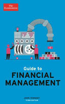 | The Economist Guide to Financial Management 3rd Edition DescriptionThe world of finance can be a minefield for the unwary. Without training, very few managers are prepared for the challenges of dealing with management reports, budgets and capital proposals, and find themselves embarrassed by their lack of understanding. This classic book, now in its third edition, supplies a step-by-step guide to the whole territory: 'how to assemble a budget', 'how to read variances on a report', 'how to construct a proposal to invest in new equipment'. By examining the actual things that managers have to do, each chapter explores the range of principles that can be applied, illustrates practical techniques and provides general guidance. The book will help the reader understand financial jargon, financial statements, management accounts, performance measures, budgeting, costing, pricing, decision-making and investment appraisal. New material brings this edition up to date with chapters on crowdfunding and the influence of global uncertainty on the best-laid financial plans. | Non-fiction | Very Good | DKK 70 | View on Vinted → |
 | The Five People You Meet in Heaven DescriptionTHE FIVE PEOPLE YOU MEET IN HEAVEN is a wonderfully moving fable that addresses the meaning of life, and life after death, in the poignant way that made TUESDAYS WITH MORRIE such an astonishing book. The novel's protagonist is an elderly amusement park maintenance worker named Eddie who, while operating a ride called the 'Free Fall', dies while trying to save a young girl who gets in the way of a falling cart that hurtles to earth. Eddie goes to heaven, where he meets five people who were unexpectedly instrumental in some way in his life. While each guide takes him through heaven, Eddie learns a little bit more about what his time on earth meant, what he was supposed to have learned, and what his true purpose on earth was. Throughout there are dramatic flashbacks where we see scenes from his troubled childhood, his years in the army in the Philippines jungle, and with his first and only love, his wife Marguerite. THE FIVE PEOPLE YOU MEET IN HEAVEN is the perfect book to follow TUESDAYS WITH MORRIE. Its compellingly affecting themes and lyrical writing will fascinate Mitch Albom's huge readership. | Fiction | Very Good | DKK 100 | View on Vinted → |
 | The Fourth Treasure DescriptionTina Suzuki has just begun her first year of graduate study. Born and raised in San Francisco by her Japanese immigrant mother, Tina knows nothing about the rest of her family, and very little about her cultural heritage. But when her boyfriend's Japanese calligraphy teacher suffers a stroke, loses his ability to communicate, but continues to create magnificent calligraphic art, Tina knows she has stumbled across an ideal research subject. Getting people to cooperate with her research is an entirely different matter. The blank personal history presented by her mother is in fact a tightly wound scroll full of scandalous secrets. Tina's studies lead to revelations about her own family - secrets she would never have expected. Juxtaposed with Tina's story is that of the stricken calligraphy teacher as a young man in Kyoto, and the history of the ancient inkstone he carries with him. Genres Fiction Japan Contemporary Novels Literary Fiction Art Asian American | Other | Very Good | DKK 50 | View on Vinted → |
 | The General Theory of Employment, Interest and Money: With the Economic Consequences of the Peace (Classics of World Literature) DescriptionJohn Maynard Keynes (1883-1946) is perhaps the foremost economic thinker of the twentieth century. On economic theory, he ranks with Adam Smith and Karl Marx; and his impact on how economics was practiced, from the Great Depression to the 1970s, was unmatched. The General Theory of Employment, Interest and Money was first published in 1936. But its ideas had been forming for decades - as a student at Cambridge, Keynes had written to a friend of his love for 'Free Trade and free thought'. Keynes's limpid style, concise prose, and vivid descriptions have helped to keep his ideas alive - as have the novelty and clarity, at times even the ambiguity, of his macroeconomic vision. He was troubled, above all, by high unemployment rates and large disparities in wealth and income. Only by curbing both, he thought, could individualism, 'the most powerful instrument to better the future', be safeguarded. The twenty-first century may yet prove him right. In The Economic Consequences of the Peace (1919), Keynes elegantly and acutely exposes the folly of imposing austerity on a defeated and struggling nation. | Non-fiction | Very Good | DKK 150 | View on Vinted → |
 | The Icarus Deception DescriptionIn Seth Godin’s most inspiring book, he challenges readers to find the courage to treat their work as a form of art Everyone knows that Icarus’s father made him wings and told him not to fly too close to the sun; he ignored the warning and plunged to his doom. The lesson: Play it safe. Listen to the experts. It was the perfect propaganda for the industrial economy. What boss wouldn’t want employees to believe that obedience and conformity are the keys to success? But we tend to forget that Icarus was also warned not to fly too low, because seawater would ruin the lift in his wings. Flying too low is even more dangerous than flying too high, because it feels deceptively safe. The safety zone has moved. Conformity no longer leads to comfort. But the good news is that creativity is scarce and more valuable than ever. So is choosing to do something unpredictable and brave: Make art. Being an artist isn’t a genetic disposition or a specific talent. It’s an attitude we can all adopt. It’s a hunger to seize new ground, make connections, and work without a map. If you do those things you’re an artist, no matter what it says on your business card. Godin shows us how it’s possible and convinces us why it’s essential. | Non-fiction | Good | DKK 60 | View on Vinted → |
 | The Jungle Description“Practically alone among the American writers of his generation, [Sinclair] put to the American public the fundamental questions raised by capitalism in such a way that they could not escape them.” —Edmund Wilson When it was first published in 1906, The Jungle exposed the inhumane conditions of Chicago’s stockyards and the laborer’s struggle against industry and “wage slavery.” It was an immediate bestseller and led to new regulations that forever changed workers’ rights and the meatpacking industry. A direct descendant of Dickens’s Hard Times, it remains the most influential workingman’s novel in American literature. For more than seventy years, Penguin has been the leading publisher of classic literature in the English-speaking world. With more than 1,700 titles, Penguin Classics represents a global bookshelf of the best works throughout history and across genres and disciplines. Readers trust the series to provide authoritative texts enhanced by introductions and notes by distinguished scholars and contemporary authors, as well as up-to-date translations by award-winning translators. | Fiction | Very Good | DKK 60 | View on Vinted → |
 | The Life-changing Magic of Tidying DescriptionTransform your home into a permanently clear and clutter-free space with the incredible KonMari Method. Japan's expert declutterer and professional cleaner Marie Kondo will help you tidy your rooms once and for all with her inspirational step-by-step method. The key to successful tidying is to tackle your home in the correct order, to keep only the things you really love and to do it all at once - and quickly. After that for the rest of your life you only need to choose what to keep and what to discard. The KonMari Method will not just transform your space. Once you have your house in order you will find that your whole life will change. You can feel more confident, you can become more successful, and you can have the energy and motivation to create the life you want. You will also have the courage to move on from the negative aspects of your life: you can recognise and finish a bad relationship; you can stop feeling anxious; you can finally lose weight. Marie Kondo's method is based on a 'once-cleaned, never-messy-again' approach. If you think that such a thing is impossible then you should definitely read this compelling book. | Non-fiction | Good | DKK 60 | View on Vinted → |
 | The Martian DescriptionThe bestseller behind the major film from Ridley Scott, starring Matt Damon and Jessica Chastain. Six days ago, astronaut Mark Watney became one of the first people to walk on Mars. Now, he’s sure he’ll be the first person to die there. After a dust storm nearly kills him and forces his crew to evacuate while thinking him dead, Mark finds himself stranded and completely alone with no way to even signal Earth that he’s alive—and even if he could get word out, his supplies would be gone long before a rescue could arrive. Chances are, though, he won’t have time to starve to death. The damaged machinery, unforgiving environment, or plain-old “human error” are much more likely to kill him first. But Mark isn’t ready to give up yet. Drawing on his ingenuity, his engineering skills — and a relentless, dogged refusal to quit — he steadfastly confronts one seemingly insurmountable obstacle after the next. Will his resourcefulness be enough to overcome the impossible odds against him? | Fiction | Very Good | DKK 70 | View on Vinted → |
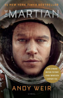 | The Martian DescriptionSix days ago, astronaut Mark Watney became one of the first people to walk on Mars. Now, he's sure he'll be the first person to die there. After a dust storm nearly kills him and forces his crew to evacuate while thinking him dead, Mark finds himself stranded and completely alone with no way to even signal Earth that he’s alive—and even if he could get word out, his supplies would be gone long before a rescue could arrive. Chances are, though, he won't have time to starve to death. The damaged machinery, unforgiving environment, or plain-old "human error" are much more likely to kill him first. But Mark isn't ready to give up yet. Drawing on his ingenuity, his engineering skills—and a relentless, dogged refusal to quit—he steadfastly confronts one seemingly insurmountable obstacle after the next. Will his resourcefulness be enough to overcome the impossible odds against him? Genres Science Fiction Fiction Book Club Space Adventure | Fiction | Good | DKK 65 | View on Vinted → |
 | The New Book of Yoga DescriptionThe Book Of Yoga is recognised as the classic, definitive guide to this popular subject. Clear, comprehensive and superbly illustrated, the book covers all aspects of the discipline and provides inspiration for beginner and expert alike. It has now been reformatted with a more modern design with full-colour pictures throughout and remains the best guide in the market. It shows you how * Develop a fit and beautiful body * Improve your health * Keep youthful in every stage of life * Enjoy a troublefree pregnancy * Eat wisely and well * Banish stress and tension * Breathe for life and vitality * Increase your powers * Experience peace of mind concentration 192 pages, Paperback First published March 2, 2000 | Other | Very Good | DKK 75 | View on Vinted → |
 | The Night Watch DescriptionOthers. They walk among us. Observing. Set in contemporary Moscow, where shape shifters, vampires, and street-sorcerers linger in the shadows, Night Watch is the first book of the hyper-imaginative fantasy pentalogy from best-selling Russian author Sergei Lukyanenko. This epic saga chronicles the eternal war of the “Others,” an ancient race of humans with supernatural powers who must swear allegiance to either the Dark or the Light. The agents of the Dark – the Night Watch – oversee nocturnal activity, while the agents of the Light keep watch over the day. For a thousand years both sides have maintained a precarious balance of power, but an ancient prophecy has decreed that a supreme Other will one day emerge, threatening to tip the scales. Now, that day has arrived. When a mid-level Night Watch agent named Anton stumbles upon a cursed young woman – an uninitiated Other with magnificent potential – both sides prepare for a battle that could lay waste to the entire city, possible the world. With language that throbs like darkly humorous hard-rock lyrics about blood and power, freedom and responsibility, Night Watch is a chilling, cutting-edge thriller, a pulse-pounding ride of fusion fiction that will leave you breathless for the next instalment. Genres Fantasy Urban Fantasy Fiction Horror Vampires Paranormal | Fiction | Good | DKK 45 | View on Vinted → |
 | The Philistine Controversy DescriptionVerso Books Contributions by Jay Bernstein, Andrew Bowie, Malcolm Bull, Noel Burch, Gail Day, Esther Leslie, Stewart Martin and Malcolm Quinn Dave Beech and John Roberts develop what they call a ‘counter-intuitive’ notion of the philistine, with insights on cultural division and exclusion In this fascinating study, Dave Beech and John Roberts develop what they call a ‘counter-intuitive’ notion of the philistine, claiming that what the philistine tells us about cultural division and exclusion is more persuasive than the theories of the popular and the ‘otherly-cultured’ in cultural studies and postmodernism. The ‘counter-intuitive’ philistine, they contest, returns the cultural debate to the problems of the persistence of power, privilege and symbolic violence. Asserting that the relations between power and art have been untheorized in recent studies, Beech and Roberts find their critical resources in the least likely place: not in the ‘best of things’, but in that which has ‘no proper place’. The book also includes several in-depth responses to the Beech and Roberts thesis by leading scholars in the field of cultural theory, together with the authors’ replies to their critics. | Non-fiction | Very Good | DKK 50 | View on Vinted → |
 | The Right It DescriptionThe Law of Market Failure: Most new products will fail in the market, even if competently executed. Using his experience at Google, his remarkable success as an entrepreneur and consultant, and insights from his lectures at Stanford University and Google, Alberto Savoia’s The Right It offers an unparalleled approach to beating the beast that is market failure. Millions of people around the world are working hard to bring to life new ideas. Some of these ideas will turn out to be stunning successes that will have a major impact on our world and our culture: The next Google, the next Polio vaccine, the next Harry Potter, the next Red Cross, the next Ford Mustang. Others will be smaller, more personal but no less meaningful, successes: A little restaurant that becomes a neighborhood favorite, a biography that does not make the best-seller list but tells an important story, a local nonprofit to care for abandoned pets. At this very same moment, another group of people is working equally hard to develop new ideas that, when launched, will fail. Some of them will fail spectacularly and publicly: like New Coke, the movie “John Carter”, or the Ford Edsel. Others will be smaller, more private, but no less painful failures: A home-based business that never takes off, a children’s book that neither publishers nor children have any interest in, a charity for a cause that too few people care enough about. If you are currently working to develop a new idea, whether on your own or as part of a team, which group are you in? Most people believe that they either are, or will be, in the first group—the group whose ideas will be successful. All they have to do is work hard and execute well. Unfortunately, we know that this cannot be the case. The law of market failure tells us that up to 90 percent of most new products, services, businesses, and initiatives will fail soon after they are launched—regardless of how promising they sound, how much we commit to them, or how well we execute… | Non-fiction | Good | DKK 70 | View on Vinted → |
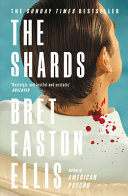 | The Shards DescriptionThe Sunday Times Bestseller 'A full-spectrum triumph' - Guardian A sensational new novel from the bestselling author of Less Than Zero and American Psycho that tracks a group of privileged Los Angeles high school friends as a serial killer strikes across the city. His first novel in 13 years, The Shards is Bret Easton Ellis at his inimitable best. LA, 1981. Buckley College in heat. 17-year-old Bret is a senior at the exclusive Buckley prep school when a new student arrives with a mysterious past. Robert Mallory is bright, handsome, charismatic, and shielding a secret from Bret and his friends, even as he becomes a part of their tightly knit circle. Bret's obsession with Mallory is equalled only by his increasingly unsettling preoccupation with The Trawler, a serial killer on the loose who seems to be drawing ever closer to Bret and his friends, taunting them with grotesque threats and horrific, sharply local acts of violence. Can he trust his friends - or his own mind - to make sense of the danger they appear to be in? Thwarted by the world and by his own innate desires, buffeted by unhealthy fixations, Bret spirals into paranoia and isolation as the relationship between The Trawler and Robert Mallory hurtles inexorably toward a collision. Gripping, sly, suspenseful, deeply haunting and often darkly funny, The Shards is a mesmerizing fusing of fact and fiction that brilliantly explores the emotional fabric of Bret's life at 17 - sex and jealousy, obsession and murderous rage. | Fiction | Very Good | DKK 70 | View on Vinted → |
 | The Story of a New Name DescriptionIn 2012, Elena Ferrante's My Brilliant Friend introduced readers to the unforgettable Elena and Lila, whose lifelong friendship provides the backbone for the Neapolitan Novels. The Story of a New Name is the second book in this series. With these books, which the New Yorker's James Wood described as "large, captivating, amiably peopled ... a beautiful and delicate tale of confluence and reversal," Ferrante proves herself to be one of Italy's most accomplished storytellers. She writes vividly about a specific neighborhood of Naples from the late-1950s through to the current day and about two remarkable young women who are very much the products of that place and time. Yet in doing so she has created a world in which readers will recognize themselves and has drawn a marvelously nuanced portrait of friendship. In The Story of a New Name, Lila has recently married and made her entrée into the family business; Elena, meanwhile, continues her studies and her exploration of the world beyond the neighborhood that she so often finds stifling. Love, jealousy, family, freedom, commitment, and above all friendship: these are signs under which both women live out this phase in their stories. Marriage appears to have imprisoned Lila, and the pressure to excel is at times too much for Elena. Yet the two young women share a complex and evolving bond that is central to their emotional lives and is a source of strength in the face of life's challenges. In these Neapolitan Novels, Elena Ferrante, the acclaimed author of The Days of Abandonment, gives readers a poignant and universal story about friendship and belonging. Genres Fiction Historical Fiction Italy Italian Literature Literary Fiction Contemporary L’amica geniale #2 The Neapolitan Novels #2 | Fiction | Good | DKK 70 | View on Vinted → |
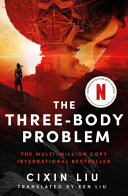 | The Three-Body Problem DescriptionRead the award-winning, critically acclaimed, multi-million-copy-selling science-fiction phenomenon - now a Netflix Original Series from the creators of Game of Thrones. 1967: Ye Wenjie witnesses Red Guards beat her father to death during China's Cultural Revolution. This singular event will shape not only the rest of her life but also the future of mankind. Four decades later, Beijing police ask nanotech engineer Wang Miao to infiltrate a secretive cabal of scientists after a spate of inexplicable suicides. Wang's investigation will lead him to a mysterious online game and immerse him in a virtual world ruled by the intractable and unpredictable interaction of its three suns. This is the Three-Body Problem and it is the key to everything: the key to the scientists' deaths, the key to a conspiracy that spans light-years and the key to the extinction-level threat humanity now faces. Praise for The Three-Body Problem: 'Your next favourite sci-fi novel' Wired 'Immense' Barack Obama 'Unique' George R.R. Martin 'SF in the grand style' Guardian 'Mind-altering and immersive' Daily Mail Winner of the Hugo and Galaxy Awards for Best Novel | Fiction | Very Good | DKK 75 | View on Vinted → |
 | The Veiled Kingdom DescriptionFrom USA Today Bestselling Author Holly Renee, author of the Stars and Shadows series, comes a scorching new fantasy romance that ignites the pages with relentless danger, forbidden passion, and the intoxicating allure of enemies to lovers. Fleeing my father's cruelty, the wicked king who robbed me of a future, I face death in the streets, caught between a rebellion and a tyrant's reign. Captured by those sworn to kill me, the rebels remain blind to my true identity-the missing daughter of the despised king. Faced with an impossible choice, I stand before them: join the rebels or face their blades. Yet, Dacre, the son of the ruthless rebellion commander, becomes torn between suspicion and a desire that mirrors my own. He allows no one to touch me, tries to protect me, yet threatens me at every turn. As secrets are weaved beyond our hidden realm, a fierce battle unfolds within me. As I get closer to the rebels, and their cause, my loyalty to my kingdom clashes with my undeniable devotion to Dacre and the burning connection between us. In a world where love and hate are two edges of the same blade, I find myself caught in a delicate dance between forbidden desire and my looming destiny. | Fiction | Very Good | DKK 60 | View on Vinted → |
 | The World Is Flat Description"The World Is Flat" is Thomas L. Friedman's account of the great changes taking place in our time, as lightning-swift advances in technology and communications put people all over the globe in touch as never before--creating an explosion of wealth in India and China, and challenging the rest of us to run even faster just to stay in place. This updated and expanded edition features more than a hundred pages of fresh reporting and commentary, drawn from Friedman's travels around the world and across the American heartland--from anyplace where the flattening of the world is being felt. In "The World Is Flat," Friedman at once shows "how and why globalization has now shifted into warp drive" (Robert Wright, Slate) and brilliantly demystifies the new flat world for readers, allowing them to make sense of the often bewildering scene unfolding before their eyes. With his inimitable ability to translate complex foreign policy and economic issues, he explains how the flattening of the world happened at the dawn of the twenty-first century; what it means to countries, companies, communities, and individuals; how governments and societies can, and must, adapt; and why terrorists want to stand in the way. More than ever, "The World Is Flat" is an essential update on globalization, its successes and discontents, powerfully illuminated by one of our most respected journalists. | Non-fiction | Good | DKK 40 | View on Vinted → |
 | Thirty Days of Darkness DescriptionA Danish literary author is challenged to write a crime novel in thirty days, travelling to a small village in Iceland for inspiration, and then a body appears ... an atmospheric, darkly funny, twisty debut thriller, first in an addictive new series. Copenhagen author Hannah is the darling of the literary community and her novels have achieved massive critical acclaim. But nobody actually reads them, and frustrated by writer' s block, Hannah has the feeling that she' s doing something wrong. When she expresses her contempt for genre fiction, Hanna is publicly challenged to write a crime novel in thirty days. Scared that she will lose face, she accepts, and her editor sends her to Hú safjö ð ur – a quiet, tight-knit village in Iceland, filled with colorful local characters – for inspiration. But two days after her arrival, the body of a fisherman' s young son is pulled from the water ... and what begins as a search for plot material quickly turns into a messy and dangerous investigation that threatens to uncover secrets that put everything at risk ... including Hannah. Atmospheric, dramatic and full of nerve-jangling twists and turns, Thirty Days of Darkness is a darkly funny, unsettling debut thriller that marks the start of a breathtaking new series. Genres Mystery Thriller Crime Nordic Noir Fiction LGBT | Fiction | Very Good | DKK 50 | View on Vinted → |
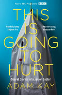 | This is Going to Hurt DescriptionAs soon as Adam Kay set foot on a hospital ward for the first time, he realised there's quite a lot they don't teach you at medical school ... His diaries from the NHS front line - scribbled in secret after long nights, endless days and missed weekends - are hilarious, horrifying and heartbreaking by turns. This Is Going to Hurt is everything you wanted to know about being a junior doctor, and more than a few things you really didn't. And yes, it may leave a scar. | Non-fiction | Very Good | DKK 40 | View on Vinted → |
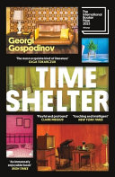 | Time Shelter DescriptionAward-winning Bulgarian author Georgi Gospodinov has enthralled readers around the world with his labyrinth-like, Kafkaesque tales of contemporary Europe. In Time Shelter, an enigmatic flâneur named Gaustine opens a “clinic for the past” that offers a promising treatment for Alzheimer’s sufferers: each floor reproduces a decade in minute detail, transporting patients back in time. As Gaustine’s assistant, the unnamed narrator is tasked with collecting the flotsam and jetsam of the past, from 1960s furniture and 1940s shirt buttons to scents and even afternoon light. But as the rooms become more convincing, an increasing number of healthy people seek out the clinic as a “time shelter”—a development that results in an unexpected conundrum when the past begins to invade the present. Intricately crafted, and eloquently translated by Angela Rodel, Time Shelter announces Gospodinov to American readers as an essential voice in international literature. | Fiction | Good | DKK 70 | View on Vinted → |
 | TouchPoints DescriptionA fresh, effective, and enduring way to lead—starting with your next interaction Most leaders feel the inevitable interruptions in their jam-packed days are troublesome. But in TouchPoints, Conant and Norgaard argue that these—and every point of contact with other people—are overlooked opportunities for leaders to increase their impact and promote their organization's strategy and values. Through previously untold stories from Conant's tenure as CEO of Campbell Soup Company and Norgaard's vast consulting experience, the authors show that a leader's impact and legacy are built through hundreds, even thousands, of interactive moments in time. The good news is that anyone can develop "TouchPoint" mastery by focusing on three essential components: head, heart, and hands. TouchPoints speaks to the theory and craft of leadership, promoting a balanced presence of rational, authentic, active, and wise leadership practices. Leadership mastery in the smallest and otherwise ordinary moments can transform aimless activity in individuals and entropy in organizations into focused energy—one magical moment at a time. | Non-fiction | Very Good | DKK 70 | View on Vinted → |
 | Trespasses Description**THE NO. 1 BESTSELLER (The Times), SHORTLISTED FOR THE WOMEN'S PRIZE FOR FICTION 2023** One by one, she undid each event, each decision, each choice. If Davy had remembered to put on a coat. If Seamie McGeown had not found himself alone on a dark street. If Michael Agnew had not walked through the door of the pub on a quiet night in February in his white shirt. There is nothing special about the day Cushla meets Michael, a married man from Belfast, in the pub owned by her family. But here, love is never far from violence, and this encounter will change both of their lives forever. As people get up each morning and go to work, school, church or the pub, the daily news rolls in of another car bomb exploded, another man beaten, killed or left for dead. In the class Cushla teaches, the vocabulary of seven-year-old children now includes phrases like 'petrol bomb' and 'rubber bullets'. And as she is forced to tread lines she never thought she would cross, tensions in the town are escalating, threatening to destroy all she is working to hold together. Tender and shocking, Trespasses is an unforgettable debut of people trying to live ordinary lives in extraordinary times. 'Like Sally Rooney mixed with a political thriller' RUSSELL KANE 'Intense, unflinchingly honest, it broke my heart a million times' MARIAN KEYES 'Absolutely loved it' MAX PORTER 'A beautiful, devastating novel' NICK HORNBY | Fiction | Very Good | DKK 50 | View on Vinted → |
 | Trigger Warning DescriptionFrom one of the most critically acclaimed and beloved storytellers of our time comes a major new collection of stories, now available in a pulp-inspired mass market edition with cover art by renowned artist Robert McGinnis! In this wide-ranging collection of short fiction, Neil Gaiman pierces the veil of reality to reveal the enigmatic, shadowy world that lies beneath. This rich compendium features stories and poetry that transport us deep into the realm of imagination—where the fantastical becomes real and the everyday incandescent—including an original American Gods novella in which Shadow Moon finds himself drawn into the dark and murderous mystery of the “Black Dog” in the English Peak District. Horror and ghost stories, speculative fiction and fairy tales, fabulism and verse—all combine to illustrate the strength and breadth of Gaiman's storytelling mastery and cement his reputation as one of the finest writers at work today. | Fiction | Very Good | DKK 40 | View on Vinted → |
 | Valkyrierne DescriptionI "Valkyrien" drager bogens forfatter og hans kone Chris ud i Mojave-ørkenen i 40 dage for at møde valkyrierne, der ifølge de gamle sagn var kvindelige krigere som Odin sendte ud til slagmarken for at udpege de bedste krigere, der skulle falde i slaget og derved komme til Valhalla. I dag huserer valkyrierne ørkenen på motorcykler. Paulo Coelho (født 1947) er en af vor tids mest læste og indflydelsesrige forfattere, der fik stor international succes med den smukke roman "Alkymisten". "Valkyrien" er en selvbiografisk roman af Coelho, der handler om at forsone sig med fortiden for at kunne favne fremtiden. | Fiction | Very Good | DKK 25 | View on Vinted → |
 | Ved floden Piedra satte jeg mig og græd Description"Ved floden Piedra satte jeg mig og græd" handler om den unge Pilar, der fører et målrettet liv, hvor al hendes koncentration er rettet mod sine studier. Dette ændrer sig dog, da hun møder sin barndomsven og første kærlighed, der elleve år tidligere forlod deres hjemegn for at blive præst. Pilar er nu en moderne, ung kvinde, hvis liv har lært hende at kontrollere sine følelser og at se alt med et rationelt blik. Han undgår indre konglikter, lever for sin religion og er blevet en karismatisk åndelig leder. Sammen rejser de gennem Pyrenæerne for at finde hinanden, kærligheden og meningen med livet. "Ved floden Piedra satte jeg mig og græd" er en selvstændig bog i Paulo Coelhos trilogi, der også omfatter romanerne "Veronika beslutter at dø" og "Djævelen og frøken Prym". | Fiction | Very Good | DKK 35 | View on Vinted → |
 | Veronika beslutter at dø Description"Veronika beslutter at dø" er en hjerteskærende, dyb og rørende fortælling om den unge og succesfulde kvinde, Veronika, der en dag beslutter sig for at dø og derfor indtager en overdosis af sovepiller. Hun vågner op på det nærmeste sygehus med beskeden om, at hun kun har få dage tilbage at leve i, fordi hendes hjerte er så medtaget. Spørgsmålet er, hvad der fik den unge kvinde til at tage beslutningen om at forlade livet? "Veronika beslutter at dø" er en fortælling om liv og død, og om hvorfor det er normalt at være gal.. | Fiction | Good | DKK 25 | View on Vinted → |
 | Vinderen står alene 🇩🇰 DescriptionI Vinderen står alene byder Paulo Coelho på en roman fuld af spænding, og et spejlbillede af den verden, vi lever i, hvor vores stræben efter luksus og succes for enhver pris ofte forhindrer os i at høre, hvad hjertet egentlig siger. Vi kommer med til filmfestivalen i Cannes, hvor Eliten samles – de, der har fået succes i drømmemagernes verden af mode og film. Nogle få har nået toppen og er bange for at miste deres ophøjede position. Penge, magt og berømmelse står på spil – værdier, som de fleste er villige til at ofre alt for. Hvem vil det lykkes at finde sin personlige drøm blandt de mange præfabrikerede drømme – og få den opfyldt? ”En duft af dannelsesroman gemmer sig bag denne fortælling fra vores moderne verden.” – Femme, Frankrig. Filmfestivalen i Cannes er samlingssted for skuespillere, instruktører, designere og supermodeller. Charmøren Igor kommer for at genvinde eks-konen Ewa, men hendes manglende interesse fører Igor ud i et ekstremt voldsorgie Filmfestivalen i Cannes er samlingssted for skuespillere, instruktører, designere og supermodeller. Charmøren Igor kommer for at genvinde eks-konen Ewa, men hendes manglende interesse fører Igor ud i et ekstremt voldsorgie. ”Mange af os bliver forledt til at tro, at de eneste værdier, det er værd er stræbe efter, er penge, magt og berømmelse. De tænker ikke over, at deres drømme bliver manipuleret.” – Paulo Coelho | Fiction | Good | DKK 25 | View on Vinted → |
 | Vintage Fashion Knitwear DescriptionA visual journey through the fashion knitwear of the decades, "Vintage Knitwear" takes a close look at the key periods, significant styles, iconoclastic designers and cultural influences in fashion knitwear. Organized chronologically, this book enables the reader to identify the unique constructions, innovative finishes and technical developments that determine the most influential knitwear designs of the decades of the twentieth century. Individual pieces that epitomize the defining characteristic of each designer or epoch are analyzed in detail. 224 pages, Hardcover First published September 2, 2010 | Non-fiction | Very Good | DKK 150 | View on Vinted → |
 | What Would Google Do? DescriptionA bold and vital book that asks and answers the most urgent question of today: What Would Google Do? In a book that's one part prophecy, one part thought experiment, one part manifesto, and one part survival manual, internet impresario and blogging pioneer Jeff Jarvis reverse-engineers Google—the fastest-growing company in history—to discover forty clear and straightforward rules to manage and live by. At the same time, he illuminates the new worldview of the internet generation: how it challenges and destroys, but also opens up vast new opportunities. His findings are counterintuitive, imaginative, practical, and above all visionary, giving readers a glimpse of how everyone and everything—from corporations to governments, nations to individuals—must evolve in the Google era. Along the way, he looks under the hood of a car designed by its drivers, ponders a worldwide university where the students design their curriculum, envisions an airline fueled by a social network, imagines the open-source restaurant, and examines a series of industries and institutions that will soon benefit from this book's central question. The result is an astonishing, mind-opening book that, in the end, is not about Google. It's about you. | Non-fiction | Good | DKK 30 | View on Vinted → |
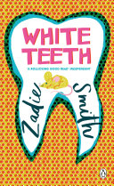 | White Teeth DescriptionChosen by the Guardian as one of the Best Books of the 21st Century From the MAN BOOKER PRIZE- and WOMEN'S PRIZE-SHORTLISTED author of Swing Time, On Beauty and Grand Union 'BELIEVE THE HYPE' The Times The international bestseller and modern classic of multicultural Britain - an unforgettable portrait of London One of the most talked about debut novels of all time, White Teeth is a funny, generous, big-hearted novel, adored by critics and readers alike. Dealing - among many other things - with friendship, love, war, three cultures and three families over three generations, one brown mouse, and the tricky way the past has of coming back and biting you on the ankle, it is a life-affirming, riotous must-read of a book. 'The almost preposterous talent was clear from the first pages' Julian Barnes, Guardian 'Street-smart and learned, sassy and philosophical all at the same time' New York Times 'Outstanding' Sunday Telegraph | Fiction | Very Good | DKK 30 | View on Vinted → |
 | Wild Cards I DescriptionThe first volume of George R. R. Martin's WILD CARDS shared-world series, back in print after a decade—and expanded with new, original material. There is a secret history of the world—a history in which an alien virus struck the Earth in the aftermath of World War II, endowing a handful of survivors with extraordinary powers. Some were called Aces—those with superhuman mental and physical abilities. Others were termed Jokers—cursed with bizarre mental or physical disabilities. Some turned their talents to the service of humanity. Others used their powers for evil. Wild Cards is their story. Originally published in 1987, Wild Cards I includes powerful tales by Roger Zelazny, Walter Jon Williams, Howard Waldrop, Lewis Shiner, and George R. R. Martin himself. And this new, expanded edition contains further original tales set at the beginning of the Wild Cards universe, by eminent new writers like Hugo–winner David Levine, noted screenwriter and novelist Michael Cassutt, and New York Times bestseller Carrie Vaughn. | Fiction | Good | DKK 40 | View on Vinted → |
 | Will Grayson, Will Grayson DescriptionOne cold night, in a most unlikely corner of Chicago, Will Grayson crosses paths with... Will Grayson. Two guys with the same name, running in two very different circles, suddenly find their lives going in new and unexpected directions, and culminating in epic turns-of-heart and the most fabulous musical ever to grace the high-school stage. | Kids & young adults | Very Good | DKK 15 | View on Vinted → |
 | You Can't Make Money from a Dead Planet DescriptionDoing good is no longer a luxury or a 'nice to have', it's a necessity. While businesses, both big and small, have undoubtedly caused the majority of our environmental and sustainability problems, only they can solve these issues at scale. You Can't Make Money from a Dead Planet looks at the challenges we face and shows how business needs to change in order to be the driver of the solution. Bestselling author and sustainability strategist Mark Shayler explains why there is no contradiction between being profitable and doing the right thing for the planet and doing the right thing for your customers. Providing the insights, the enthusiasm and the tools to align your business with sustainability, the book blends explanations of the challenges that we face, with stories from those business that have excelled in sustainability. Exploring current sustainability approaches and trends including net-zero, circular economy, ESG, B-Corps, zero waste and environmental management systems, You Can't Make Money From a Dead Planet explains, debunks and helps you navigate the sustainable agenda while growing your business. | Non-fiction | Very Good | DKK 65 | View on Vinted → |
 | Zahir 🇩🇰 DescriptionZahir er en roman med mange biografiske islæt. Coelho skriver mesterligt og almengyldigt om et besat menneskes kamp med sine dæmoner, om smertefulde renselsesprocesser, men først og fremmest - om kærligheden og medmenneskeligheden. En kendt forfatter - en af verdens bedst sælgende, der skriver om åndelige erfaringer og en gang gik pilgrimsruten til Santiago - bliver pludselig forladt af sin kone. Hun efterlader sig ingen spor. Forfatteren bliver besat af ønsket om at forstå årsagen til hendes forsvinden.Zahir er arabisk, og betyder synlig, tilstede og umulig ikke at lægge mærke til. Noget eller nogen som i begyndelsen bare passerer vore tanker, men som snart bliver det eneste vi kan tænke på. Det kan tolkes som en guddommelig velsignelse eller en besættelse på grænsen til galskab.Zahir handler om søgen efter kærlighed. Den fortæller om en rejse ind i sig selv og ud i verden i forsøg på at blive genforenet med sin elskede.Men får hovedpersonen nogensinde mødt sit livs kærlighed? Og hvad vil det koste ham af selvransagelse og revurdering af egne opfattelser om mand, kvinde, frihed, kærlighed og mening med livet? Vejen til den elskede viser sig at være meget mere kompliceret og længere end tilbagelægningen af den fysiske afstand. | Fiction | Very Good | DKK 35 | View on Vinted → |
| Zahir 🇩🇰 DescriptionZahir er en roman med mange biografiske islæt. Coelho skriver mesterligt og almengyldigt om et besat menneskes kamp med sine dæmoner, om smertefulde renselsesprocesser, men først og fremmest - om kærligheden og medmenneskeligheden. En kendt forfatter - en af verdens bedst sælgende, der skriver om åndelige erfaringer og en gang gik pilgrimsruten til Santiago - bliver pludselig forladt af sin kone. Hun efterlader sig ingen spor. Forfatteren bliver besat af ønsket om at forstå årsagen til hendes forsvinden.Zahir er arabisk, og betyder synlig, tilstede og umulig ikke at lægge mærke til. Noget eller nogen som i begyndelsen bare passerer vore tanker, men som snart bliver det eneste vi kan tænke på. Det kan tolkes som en guddommelig velsignelse eller en besættelse på grænsen til galskab.Zahir handler om søgen efter kærlighed. Den fortæller om en rejse ind i sig selv og ud i verden i forsøg på at blive genforenet med sin elskede.Men får hovedpersonen nogensinde mødt sit livs kærlighed? Og hvad vil det koste ham af selvransagelse og revurdering af egne opfattelser om mand, kvinde, frihed, kærlighed og mening med livet? Vejen til den elskede viser sig at være meget mere kompliceret og længere end tilbagelægningen af den fysiske afstand. | Fiction | Very Good | DKK 25 | View on Vinted → |
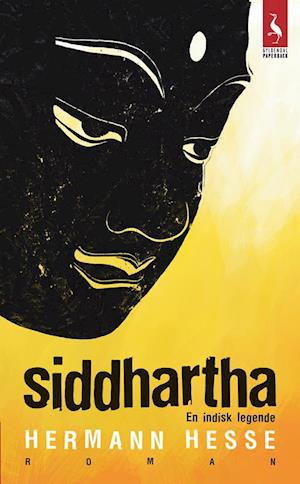 | 🇩🇰 Siddhartha - en indisk legende Description"Siddhartha" er den smukke fortælling om den fromme brahmanersøn Siddhartha, der i sin jagt på sandheden forlader sin familie, forkaster sin tro og drager ud for at finde sig selv. Siddharthas indre rejse fører ham først til askese, siden til et verdsligt liv, men begge keder ham og fordærver ham. Det tager kærlighed og et skæbnesvangert møde med Buddha, før han finder frem til indre ro og ægte visdom. "Siddhartha" er Herman Hesses berømte roman fra 1922. | Fiction | Good | DKK 65 | View on Vinted → |
 | 🇩🇰Harpiks Description"Det var mørkt i det hvide værelse, da min far slog min farmor ihjel. Jeg var der. Carl var der også, men ham opdagede de aldrig. [...] Alt var anderledes dengang. Det var før, min fars ting var begyndt at fylde så meget, at vi ikke længere kunne komme ind i stuen. Og før min mor var blevet så stor, at hun ikke længere kunne komme ud af soveværelset. Men det var efter, at de havde meldt mig død, så slap jeg for at komme i skole." Pigen Liv vokser op på en lille isoleret ø med sine forældre. Hun sætter ingen spørgsmålstegn ved det liv, familien lever. Selvom faderen holder hende skjult i en gammel container, er hun aldrig i tvivl om, at han elsker hende. HARPIKS er en rå, mørk og kærlig fortælling om en familie på kanten. Om angsten for at miste, om mord og paranoia - og om utilsigtet ondskab. Foruden HARPIKS (2015) har Ane Riel skrevet romanerne SLAGTEREN I LISELEJE (2013), BÆST (2019) og URVÆRK (2021) og novellerne SMÅ STØD (2023). Hun er oversat til 26 sprog og har modtaget flere danske og internationale priser for sine bøger. | Fiction | Very Good | DKK 30 | View on Vinted → |
 | 🇬🇧 Masters of Sex DescriptionNow a New Showtime Original Series Showtime's dramatic series Masters of Sex , starring Michael Sheen and Lizzy Caplan, is based on this real-life story of sex researchers William Masters and Virginia Johnson. Before Sex and the City and ViagraTM, America relied on Masters and Johnson to teach us everything we needed to know about what goes on in the bedroom. Convincing hundreds of men and women to shed their clothes and copulate, the pair were the nation’s top experts on love and intimacy. Highlighting interviews with the notoriously private Masters and the ambitious Johnson, critically acclaimed biographer Thomas Maier shows how this unusual team changed the way we all thought about, talked about, and engaged in sex while they simultaneously tried to make sense of their own relationship. Entertaining, revealing, and beautifully told, Masters of Sex sheds light on the eternal mysteries of desire, intimacy, and the American psyche. Genres Nonfiction Biography History Science Sexuality Psychology | Non-fiction | Very Good | DKK 65 | View on Vinted → |
No books match those filters.